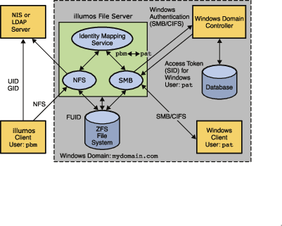

1. Preface
The illumos SMB Administration Guide describes the illumos Server Message Block (SMB) service. This book is intended for system administrators and end users. Both illumos Operating System (illumos OS) and Windows system administrators can use this information to configure and integrate the illumos SMB service into a Windows environment. In addition, system administrators can configure the identity mapping service. Finally, the chapter about the illumos SMB client is primarily intended for illumos users who would like to mount SMB shares. The illumos SMB client chapter also includes tasks to be performed by a system administrator.
|
This illumos release supports systems that use the SPARC and x86 families of processor architectures: UltraSPARC, SPARC64, AMD64, Pentium, and Xeon EM64T. The supported systems appear in the illumos Hardware Compatibility List. This document cites any implementation differences between the platform types. In this document the term “x86” refers to 64–bit and 32–bit systems manufactured using processors compatible with the AMD64 or Intel Xeon/Pentium product families. For supported systems, see the illumos Hardware Compatibility List. === Related Third-Party Web Site References Third-party URLs are referenced in this document and provide additional, related information. |
Sun is not responsible for the availability of third-party web sites mentioned in this document. Sun does not endorse and is not responsible or liable for any content, advertising, products, or other materials that are available on or through such sites or resources. Sun will not be responsible or liable for any actual or alleged damage or loss caused or alleged to be caused by or in connection with use of or reliance on any such content, goods, or services that are available on or through such sites or resources.
1.2. Typographic Conventions
The following table describes the typographic conventions that are used in this book.
| Typeface | Meaning | Example |
|---|---|---|
|
The names of commands, files, and directories, and onscreen computer output |
Edit your Use
|
|
What you type, contrasted with onscreen computer output |
|
<aabbcc123> |
Placeholder: replace with a real name or value |
The command to remove a file is |
AaBbCc123 |
Book titles, new terms, and terms to be emphasized |
Read Chapter 6 in the User’s Guide. A cache is a copy that is stored locally. Do not save the file. Note: Some emphasized items appear bold online. |
1.3. Shell Prompts in Command Examples
The following table shows the default UNIX system prompt and superuser prompt for the C shell, Bourne shell, and Korn shell.
| Shell | Prompt |
|---|---|
C shell |
|
C shell for superuser |
|
Bourne shell and Korn shell |
|
Bourne shell and Korn shell for superuser |
|
2. Windows Interoperability (Overview)
This administration guide provides the information needed to integrate an illumos Server Message Block (SMB) server into an existing Windows environment and also describes the illumos SMB client, which enables you to mount SMB shares on illumos systems.
Windows clients can access SMB shares from the illumos SMB service as if they were made available from a Windows server. This guide focuses only on the information required to integrate the illumos SMB service and how to use the illumos SMB client. Windows topics are only covered when those topics affect the integration of the illumos SMB service into the Windows environment.
|
The Server Message Block (SMB) protocol allows SMB clients to access files and resources on SMB servers. SMB is the predominant file-sharing protocol in Windows environments. In this docuemnt, the term SMB is used to refer to all versions of the SMB protocol. === The illumos SMB Service The illumos Operating System (illumos OS) provides an integrated SMB service. An illumos server can be an active participant in a Windows active directory domain and provide ubiquitous, cross-protocol file sharing through SMB and NFS to clients in their native dialect. The illumos SMB service allows a native illumos system to serve files, by means of SMB shares, to SMB enabled clients, such as Windows and Mac OS systems. By virtue of the illumos SMB service, a Windows client (or other SMB client) can interoperate with the illumos SMB service as it would with a Windows server. The illumos SMB service can operate in either workgroup mode or in domain mode. In workgroup mode, the illumos SMB service is responsible for authenticating users locally when access is requested to shared resources. This authentication process is referred to as local login. In domain mode, the illumos SMB service uses either Kerberos or "pass-through" authentication. With pass-through authentication, the server uses NetLOGON RPC to pass authentication requests through to a domain controller. When a user is successfully authenticated, the illumos SMB service generates an access token using the security identifiers (SIDs) that represent the user’s identity and the groups of which the user is a member. When the user requests access to files or resources from the service, the access token is used to determine access to files by cross-checking the token with the access control list (ACL) or permissions on files and resources. illumos OS credentials have been enhanced to fully support Windows-style SIDs. In addition, file systems, such as ZFS, support Windows-style ACLs and access checking. The illumos OS is unique in that it can manage user identities
simultaneously by using both traditional Unix-style UIDs and GIDs and
Windows-style SIDs. When a user is authenticated through the SMB
service, the user’s Windows identity is mapped to the appropriate UNIX
identity by the For more information about how the illumos OS manages user identities, see Identity Mapping Administration (Tasks). The following diagram shows how an illumos file server can operate simultaneously with both Unix name services and Windows domains. The Windows domain controller provides SMB authentication and naming services for SMB clients and servers, while the Unix name servers provide naming services for NFS clients and servers. Note that a Windows domain controller can also act as a Unix name service.

Figure 1. illumos SMB Environment
==== illumos SMB Service |
The Samba and SMB services cannot be used simultaneously on a single illumos system. The Samba service must be disabled in order to run the illumos SMB service. For more information, see task_title.
For a high-level overview of configuring the illumos SMB service, see
Configuring the illumos SMB Service – Process
Overview. For information about configuring the service, see Chapter 3,
illumos SMB Service Administration (Tasks). For
more information about the illumos SMB service, see the smbadm(8),
smbd(8), smbstat(8), smb(5), smbautohome(5), and
pam_smb_passwd(7) man pages.
-
If the file system supports the
archive,hidden,read-only, andsystemattributes, these attributes are made available as the DOS attributes available on Windows systems. ZFS supports these attributes. -
If the file system supports illumos extended attributes, they are made available as NTFS alternate data streams (also known as "named streams").
-
The case-sensitivity capabilities of the file system are made available to SMB clients. To support both Windows-style access and POSIX access, a file system should support mixed-mode, which is simultaneous support for case-sensitive and case-insensitive name operations.
The illumos OS supports both the NFS and SMB protocols, which have different expectations regarding case behavior. For instance, Windows clients typically expect case-insensitive behavior while local applications and NFS clients typically expect case-sensitive behavior. The ZFS file system supports three case modes: case-sensitive, case-insensitive, and mixed. The ZFS file system can indicate case conflicts when in mixed mode. Mixed mode is recommended for maximum multi-protocol compatibility.
-
To provide full Windows access control list (ACL) support, file systems should be able to store SIDs and they should at least support NFSv4 ACLs.
For information about the supported features of the UFS and ZFS file
systems, see the ufs(4FS) man page and the
ZFS Administration Guide,
respectively.
For information about how to access SMB shares from your client, refer to the client documentation.
2.1. illumos SMB Client
The SMB protocol is the native file-sharing protocol used by Windows and Mac OS systems. Samba implements the SMB protocol for UNIX and Linux systems. The illumos SMB client is a virtual file system that provides access to files and directories from the SMB service.
By using the illumos SMB client, a user can mount remote SMB shares (directories) on their illumos system to get read-write access to previously inaccessible files. The illumos SMB client enables an unprivileged user to mount and unmount shares on directories he owns.
For more information about how to use the illumos SMB client to access
shares, see Chapter 4, illumos SMB Client
Administration (Tasks), and the smbutil(1), mount_smbfs(8),
nsmbrc(5), and pam_smbfs_login(7) man pages.
2.2. Identity Mapping Service
The illumos OS includes an identity mapping service that enables you to map identities between Unix and Windows systems using:
-
Name-based mapping. Maps Windows and Unix users and groups by name in the following ways:
-
Directory-based mapping. Uses name mapping information that is stored in user or group objects in the Active Directory (AD) and/or the native LDAP directory service to map users and groups.
-
Rule-based mapping. An administrator uses rules to map Windows and Unix users and groups by name.
-
-
Ephemeral ID mapping. A UID or GID is dynamically allocated as needed for every SID that is not already mapped by name. Ephemeral ID mapping is used by default.
-
Local SID mapping. A non-ephemeral UID or GID is mapped to an algorithmically generated local SID.
The idmap utility can be used to create and manage the name-based
mappings and to monitor the mappings in effect.
For more information about mapping user and group identities, see
Mapping User and Group Identities. For
information about how to determine your identity mapping strategy, see
Creating Your Identity Mapping Strategy.
For instructions on how to use the idmap command, see
Managing Directory-Based Identity
Mapping for Users and Groups (Task Map),
Managing Rule-Based Identity Mapping for
Users and Groups (Task Map), and the idmap(8) man page.
2.3. Managing illumos SMB Configuration Properties
The illumos SMB service and the illumos SMB client use the sharectl
command to manage configuration properties. For descriptions of the
illumos SMB service properties, see the sharectl(8) and smb(5) man
pages. For descriptions of the illumos SMB client properties, see the
nsmbrc(5) man page.
The illumos SMB properties and their values are stored in the Service Management Facility (SMF). For more information about SMF, see Chapter 15, Managing Services (Overview), in System Administration Guide: Basic Administration.
The sharectl command is used throughout the configuration process to
set and view properties. This command and examples of its use are
described in Chapter 3, illumos SMB Service
Administration (Tasks). The sharectl command is also used by the
illumos SMB client to configure the global environment. For more
information, see Chapter 4, illumos SMB Client
Administration (Tasks).
2.4. Configuring the illumos SMB Service – Process Overview
This section describes the high-level process for configuring the illumos SMB service.
-
Determine your identity mapping strategy.
-
Configure the illumos SMB service as a client to the various services that are used in your environment.
Your illumos system might need to be a client of other services that are available in your environment. * For DNS, see System Administration Guide: Naming and Directory Services (DNS, NIS, and LDAP). * For Kerberos, see Configuring Kerberos Clients (Task Map) in System Administration Guide: Security Services. * For LDAP, see Chapter 12, Setting Up LDAP Clients (Tasks), in System Administration Guide: Naming and Directory Services (DNS, NIS, and LDAP). * For NIS, see Setting Up NIS Clients in System Administration Guide: Naming and Directory Services (DNS, NIS, and LDAP). * For NTP, see How to Set Up an NTP Client in System Administration Guide: Network Services.
-
Determine whether you want the illumos SMB service to join an existing Windows domain or a Windows workgroup.
-
To join a domain, see How to Configure the illumos SMB Service in Domain Mode.
-
To join a workgroup, see How to Configure the illumos SMB Service in Workgroup Mode.
-
-
Define one or more SMB shares.
2.5. Utilities and Files Associated With the illumos SMB Server and Client
2.5.1. illumos SMB Utilities
mount_smbfs Command
With this command, you can attach a named SMB share to a specified mount
point. The mount_smbfs command enables you to mount an SMB share
to a directory you own without having to become superuser.
Also, see the mount_smbfs(8) man page.
sharectl Command
-
Set client and server operational properties
-
Display property values for a specific protocol
-
Obtain the status of a protocol
Also, see the sharectl(8) man page.
sharemgr Command
-
Share. One or more files or directories in a share group.
-
Share group. A container of one or more shared files or directories.
-
Options for
sharemgrare set to a share group, not to a specific file or directory. All options apply to each file and directory in the group. -
A file or directory can only be assigned to one share group. However, you can move a file or directory from one group to another.
-
A share group can be used by multiple file system types. For example, the share group
my_groupcould be used by NFS and ZFS and be assigned one set of options for NFS and another set of options for ZFS.When a share is managed by ZFS,
sharemgridentifies the share and lists it in azfsshare group.The
sharemgrutility provides a unique way of checking the validity of a desired configuration. Thenoption allows you to test the validity of the options and properties you want to use with a specific subcommand. The test does not change your configuration. For example, if you use thenoption with the subcommandcreate, no share group is created.
-
You can also use the ZFS sharesmb property to configure SMB sharing.
For more information, see
task_title and the zfs(8) and
zpool(8) man pages.
Also, see the sharemgr(8) man page.
smbadm Command
You can use the smbadm command to manage domain membership of the
illumos SMB service. For instance, you can have the illumos SMB service
use domain mode or workgroup mode. The smbadm command also enables you
to configure SMB local groups. SMB local groups can be used when Windows
accounts must be members of some local groups and when Windows-style
privileges must be granted. Unix local groups cannot provide these
functionalities.
Also, see the smbadm(8) man page.
smbstat Command
You can use the smbstat command to show statistical information about
the smbd server. By default, the smbstat command shows general
information about the SMB service as well as dispatched SMB request
counters. For more information, see the smbstat(8) man page.
The kstat command can be used to report on kernel SMB statistics on a
periodic basis and also to specify information about individual SMB
statistics. For more information, see the kstat(8) man page.
smbutil Command
-
View the shares available for mounting from a particular SMB server
-
Print a file via a "print" share on an SMB server
-
Generate a hash of a password for storing in a file such as
$HOME/.nsmbrc -
Create or remove persistent passwords used to authenticate to SMB servers
-
Resolve a name to an IP address for a server that uses SMB over NetBIOS, not TCP
-
Resolve the specified server to the NetBIOS workgroup and system name
Also, see the smbutil(1) man page.
umount_smbfs Command
With this command, you can remove a named SMB share from a mount point.
For more information, see task_title, and
the mount_smbfs(8) man page.
2.5.2. illumos SMB Service Daemon
The smbd daemon supports SMB activities on illumos systems. The smbd
daemon provides the gateway to the various user space components that
support non-file I/O SMB services. Similar to the NFS kernel service,
the SMB kernel module provides SMB file I/O services directly between
the network interface and the virtual file system (VFS) within the
kernel. Whenever a non-file I/O request is received, such as a user
authentication or an MS-RPC named pipe request, it is passed to smbd
for processing in user space. Requests that require interaction with a
domain controller via SMB "named pipes" are passed to the SMB client,
which handles the outbound SMB connection management.
The smbd daemon depends on the idmapd daemon. For more information
about the identity mapping service, see Chapter 2,
Identity Mapping Administration (Tasks), and the
idmap(8) and idmapd(8) man pages.
smbd is part of the svc:/network/smb/server:default service.
For more information, see the smbd(8) man page.
2.5.3. illumos SMB Files
-
/etc/auto_direct -
/etc/smbautohome -
$HOME/.nsmbrc
/etc/auto_direct File
Use the /etc/auto_direct file to automatically mount an SMB share
when a user accesses the mount point. To use the automount feature, you
must store a persistent password for authentication to mount the share.
See task_title.
For instructions and examples, see task_title.
/etc/smbautohome File
The /etc/smbautohome file is used to define the automatic sharing
rules to be applied when a user connects to the illumos SMB service. For
more information, see Autohome Shares and the
smbautohome(5) man page.
$HOME/.nsmbrc File
You can use the $HOME/.nsmbrc file to override global behavior of the
illumos SMB client. Global values are set in the Service Management
Facility (SMF). The .nsmbrc file is used to customize the behavior of
the illumos SMB client on a per-user basis.
By default, settings in the $HOME/.nsmbrc file are used unless they
have security implications, in which case the stronger security setting
is used.
Also, see the nsmbrc(5) man page.
2.6. Authentication, Directory, Naming, and Time Services
This section describes the various services that the illumos SMB service interoperates with as a client.
-
Active Directory Service (AD). AD is a Windows directory service that is integrated with the Domain Name System (DNS). AD runs only on domain controllers. In addition to storing and making data available, AD protects network objects from unauthorized access and replicates objects across a network so that data is not lost if one domain controller fails.
-
Domain Name System (DNS). DNS resolves host names to Internet Protocol (IP) addresses for the system. This service enables you to identify a server by either its IP address or its name.
-
Dynamic DNS (DDNS). DDNS is provided with AD and enables a client to dynamically update its entries in the DNS database.
-
Lightweight Data Access Protocol (LDAP). LDAP is a standard, extensible directory access protocol that enables clients and servers that use LDAP naming services to communicate with each other.
-
Network Information Service (NIS). NIS is a naming service that focuses on making network administration more manageable by providing centralized control over a variety of network information. NIS stores information about the network, machine names and addresses, users, and network services.
-
Network Time Protocol (NTP). NTP is a protocol that enables a client to automatically synchronize its system clock with a time server. The clock is synchronized each time the client is booted and any time it contacts the time server.
2.7. SMB Shares
A shared resource, or share, is a local resource on a server that is accessible to SMB clients on the network. For the illumos SMB service, a share is typically a directory. Each share is identified by a name on the network. An SMB client sees the share as a complete entity on the SMB server, and does not see the local directory path to the share on the server.
|
A share and a directory are independent entities. Removing a share does not affect the underlying directory. Shares are commonly used to provide network access to home directories on a network file server. Each user is assigned a home directory. A share is persistent and remains defined regardless of whether users are connected to the server. The illumos SMB service provides a special kind of share called an autohome SMB share. An autohome share is a transient share of a user’s home directory that is created when a user logs in and removed when the user logs out. When a user browses the system, only statically defined shares and his autohome share will be listed. The autohome share feature eliminates the administrative task of defining and maintaining home directory shares for each user that accesses the system through the SMB protocol. The system creates autohome shares when a user logs in, and removes them when the user logs out. This process reduces the administrative effort needed to maintain user accounts, and increases the efficiency of service resources. For example, if
However, defining and maintaining directory shares in this way for each user is inconvenient. Instead, you can use the autohome feature. |
The illumos SMB client does not support autohome shares.
To configure the autohome feature, you need to specify autohome share
rules. For example, if a user’s home directory is /fort/sally, the
autohome path is /fort. The temporary share is named sally. Note
that the user’s home directory name must be the same as the user’s login
name. See task_title.
When a user logs in, the illumos SMB service looks for a subdirectory that matches the user’s name based on any rules that have been specified. If the service finds a match and if that share does not already exist, the subdirectory is added as a transient share. When the user logs out, the service removes that transient share.
Some Windows clients log a user out after 15 minutes of inactivity, which results in the autohome share disappearing from the list of defined shares. This behavior is expected for SMB autohome shares. Even after an SMB autohome share is removed, the share reappears when the user attempts to access the system (for example, in an Explorer window).
|
All autohome shares are removed when the illumos SMB service is restarted. ===== Autohome Entries The illumos SMB service can automatically share home directories when an
SMB client connects. The autohome map file, For example, the following entries specify the autohome rules for a particular environment: +nsswitch dn=ads,dn=sun,dn=com,ou=users jane /home/?/& dn=ads,dn=sun,dn=com,ou=users The ====== Autohome Map Entry Format A map entry, also referred to as a mapping, uses the following format: key location [ container ] <key> is a user name, <location> is the fully qualified path for the user’s home directory, and <container> is an optional AD container. If you intend to publish the share in AD, you must specify an AD container name, which is specified as a comma-separated list of attribute name-value pairs. The attributes use the Lightweight Data Access Protocol (LDAP) distinguished name (DN) or relative distinguished name (RDN) format.
|
The attribute type that is used to describe an object’s RDN is called a naming attribute.
-
cnfor theuserobject class -
oufor theOU(organizational unit) object class -
dcfor thedomainDnsobject class
Autohome Map Key Substitution
-
The ampersand character (
&) is expanded to the value of the key field for the entry in which it occurs. In the following example,&expands tojane:jane /home/&
-
The question mark character (
?) is expanded to the value of the first character in the key field for the entry in which it occurs. In the following example, the path is expanded to/home/jj/jane:jane /home/??/&
Wildcard Rule
When supplied in the key field, the asterisk character (*) is
recognized as the “catch-all” entry. Such an entry matches any key not
previously matched.
For example, the following entry would map any user to a home directory
in /home in which the home directory name was the same as the user
name:
* /home/&
|
The wildcard rule is only applied if an appropriate rule is not matched by another map entry. ====== The +nsswitch Like the “catch-all” entry, the |
The wildcard and nsswitch rules are mutually exclusive. Do not include
an nsswitch rule if a wildcard rule has already been defined.
2.8. Local SMB Groups
Local SMB groups can be created on the system that runs the illumos SMB service. These SMB groups apply only to users that are connected through SMB.
-
Administrators. Members of this group can fully administer files and directories on the system.
-
Backup Operators. Members of this group can bypass file security to back up and restore files.
-
Power Users. Members of this group can be assigned ownership of files and directories on the system, and can back up and restore files.
Local groups use privileges to provide a secure mechanism for assigning task responsibility on a system-wide basis. Each privilege has a well-defined role assigned by the system administrator to a user or a group.
Unlike access rights (which are assigned as permissions on a per-object basis through security descriptors), privileges are independent of objects. Privileges bypass object-based access control lists to allow the holder of the privilege to perform the role assigned. For example, members of the Backup Operators group must be able to bypass normal security checks to back up and restore files they would normally not be able to access.
-
An access right is explicitly granted or denied to a user or a group. Access rights are assigned as permissions in a discretionary access control list (DACL) on a per-object basis.
-
A privilege is a system-wide role that implicitly grants members of a group the ability to perform predefined operations. Privileges override or bypass object-level access rights.
You can assign any of the privileges to any of the local groups. Because you can make any domain user a member of the local groups, you can assign these privileges to any domain user.
-
Back up files and directories. Perform backups without requiring read access permission on the target files and folders.
-
Restore files and directories. Restore files without requiring write access permission on the target files and folders.
-
Take ownership of files and folders. Take ownership of an object without requiring take-ownership access permission. Ownership can only be set to those values that the holder of the privilege may legitimately assign to an object.
By default, members of the local Administrators group can take ownership of any file or folder, and members of the Backup Operators group can perform backup and restore operations. Members of the Power Users group do not have default privileges.
For information about managing SMB groups, see Managing SMB Groups (Task Map).
3. Identity Mapping Administration (Tasks)
This chapter describes the identity mapping service that maps Windows security identifiers (SIDs) to Unix user identifiers (UIDs) and group identifiers (GIDs). The chapter also includes instructions on how to manage name-based mappings.
The idmapd service can run in the global zone or in non-global zones.
However, if the Trusted Extensions software is enabled, the idmapd
service must run in the global zone.
Many of the tasks in this section require that you:
Become superuser, assume an equivalent role, obtain the
solaris.admin.idmap.rules RBAC authorization, or use the “Idmap
Service Management” RBAC profile.
Roles contain authorizations and privileged commands. For more information about roles, see Configuring RBAC (Task Map) in System Administration Guide: Security Services. To configure a role with the Primary Administrator profile, see Chapter 2, Working With the Management Console (Tasks), in System Administration Guide: Basic Administration.
3.1. Identity Mapping Quick Start
Note that in the simple case where you have some SMB shares that are not
normally accessed via NFS or local Unix users, you do not need to
configure anything in idmap. The ZFS file system will store
Windows-style Security Identifiers (SIDs) and present them to local Unix
users as ephemeral UID or GID values.
If you are planning multi-procol access to some file system (eg. via
both SMB and NFS) then the main purpose of idmap configuration is to
let files created by SMB show "normal" looking UID and GID values when
accessed via NFS. By far the easiest and most popular way to accomplish
that is to use an AD server with "rfc2307bis" schema extensions, and
configure idmap to use directory_based_mapping = idmu as
described in Creating Your Identity
Mapping Strategy below.
For more advanced or customized idmap configurations, continue as
described in the remaining sections below.
3.2. Mapping User and Group Identities
The illumos SMB service is designed to reside in a multiprotocol
environment and provide an integrated model for sharing data between
Windows and illumos systems. Although files can be accessed
simultaneously from both Windows and illumos systems, no
industry-standard mechanism is used to define a user in both Windows and
illumos environments. Objects can be created in either environment, but
traditionally the access control semantics for each environment are
vastly different. The illumos OS has adopted the Windows model of access
control lists (ACLs) by introducing ACLs in NFSv4 and ZFS, and by
providing the idmapd identity mapping service.
The illumos SMB service uses identity mapping to establish an equivalence relationship between a Unix user or group and a Windows user or group in which both the Unix and Windows identities are deemed to have equivalent rights on the system.
The illumos SMB service determines the Windows user’s Unix credentials
by using the idmapd service to map the SIDs in the user’s Windows
access token to UIDs and GIDs, as appropriate. The service checks the
mappings and if a match for the Windows domain name and Windows entity
name is found, the Unix UID or GID is taken from the matching entry. If
no match is found, an ephemeral UID or GID is dynamically allocated. An
ephemeral ID is a dynamic UID or GID mapping for an SID that is not
already mapped by name. An ephemeral ID does not persist across illumos
system reboots. Ephemeral mappings enable the illumos SMB service to
work in a Windows environment without having to configure any name-based
mappings.
-
Name-based mapping. Maps Windows and Unix users and groups by name in the following ways:
-
Directory-based mapping. If configured,
idmapdfirst tries to use name mapping information that is stored in user or group objects in the Active Directory (AD), in the native LDAP directory service, or in both. For instance, an AD object for a particular Windows user or group can be augmented to include the corresponding Unix user or group name. Similarly, the native LDAP object for a particular Unix user or group can be augmented to include the corresponding Windows user or group name.You can configure
idmapdto use AD and/or native LDAP directory-based name mappings by setting theidmapservice properties in SMF. See Service Properties in theidmap(8)man page.If directory-based name mapping is not configured or if it is configured but not found,
idmapdwill process locally stored rule-based mappings. -
Rule-based mapping. An administrator maps Windows and Unix users and groups by name.
-
-
Ephemeral ID mapping. A UID or GID is dynamically allocated for every SID that is not mapped by name.
-
Local SID mapping. A non-ephemeral UID or GID is mapped to an algorithmically generated local SID if it is not mapped by name.
You can use the idmap command to create and manage the rule-based
mappings.
-
Bidirectional mapping. Map the specified Windows name to the specified Unix name, and map the specified Unix name to the specified Windows name. By default, rule-based mappings that you create are bidirectional.
The following example shows a bidirectional mapping of the Windows user
dana@example.comtodanas, the Unix user. Note thatdana@example.commaps todanas, anddanasmaps todana@example.com.dana@example.com == danas
-
Unidirectional mapping. Map the names only in the specified direction.
The following example combines unidirectional and bidirectional mappings to map between Windows users
dana@example.comanddanasan@example.comand Unix userdanas. The bidirectional rule maps between Windows userdana@example.comand Unix userdanas. The unidirectional rule maps Windows userdanasan@example.comto the Unix userdanas. When Unix userdanasneeds to map to the appropriate Windows user, it maps todana@example.com.dana@example.com == danas danasan@example.com => danas
On Windows and illumos systems, files have an owner attribute and a group attribute. A Unix file owner attribute must be a UID, and the group attribute must be a GID. Unlike the illumos OS, Windows has no such restrictions. Windows permits either a user SID or a group SID to be a file owner or a file group. In fact, Windows uses the Administrator Group as a file owner in many instances, and any Windows application can set the file owner and group attributes to any SID.
-
Map a group SID to a UID when the group SID occurs in an owner field
-
Map a user SID to a GID when the user SID occurs in group field
These are called diagonal mappings, which use naming rules to set up the mappings.
3.2.1. Unix Users and Groups
Unix users and groups can be defined in local files (/etc/passwd and
/etc/group) or in a naming or directory service, such as NIS and LDAP.
The naming services you configure are listed in the illumos naming
services switch file /etc/nsswitch.conf. For more information, see
Chapter 2, The Name Service Switch (Overview), in System Administration
Guide: Naming and Directory Services (DNS, NIS, and LDAP).
The illumos SMB service can be configured as a client of the various distributed naming services, such as NIS and LDAP. For information about configuring the illumos SMB service as a client for these naming services, see System Administration Guide: Naming and Directory Services (DNS, NIS, and LDAP).
Each user and group is assigned a 32-bit identifier known, respectively,
as a user ID (UID) and a group ID (GID). The illumos OS has extended the
uid_t and gid_t types from signed to unsigned 32-bit
integers. Now that the uid_t and gid_t types are unsigned,
the upper half of these namespaces is available for ephemeral dynamic ID
mapping. This mapping process enable IDs to be assigned dynamically and
ephemerally on demand. An ephemeral mapping is one that does not
survive an illumos system reboot. Typically, the UID or GID uniquely
identifies a user or group within a single Unix domain. However, these
values are not unique across domains.
Traditionally, UID zero and GID zero are assigned to the root user and
group, respectively. The root user is granted almost unlimited access
to system objects in order to perform administration tasks.
3.2.2. Windows Users and Groups
Windows users and groups are defined in a Security Account Manager (SAM) database, which is managed on a Windows domain controller. Each user and group is identified by a security identifier (SID). A SID is a variable-length structure that uniquely identifies a user or group both within a host and a local domain, and across all possible Windows domains.
The text form of an SID is represented as follows:
S-R-I-SA-SA-..-SA
-
S– Identifies the string as an SID. -
<R> – Identifies the revision number, which is currently 1.
-
<I> – Identifies the 48-bit identifier authority value, which is the agent or namespace that issued the SID.
-
<SA> – Is one or more subauthorities, which are 32-bit integers.
It is often convenient to split SIDs into a "domain part" (or "domain SID" and a "relative ID" (RID). The last aubauthority is referred to as the RID, and evertying before that is referred to as the "domain SID".
For example, the SID S-1-5-32-500 has a domain SID of S-1-5-32
containing the version number of 1, first identifier authority value
5, and subauthority 32. The last subauthority value (500) is the
RID.
The idmapd service generates a unique SID for the host on which it
runs. This SID is used to represent both users and groups that cannot be
mapped by name to SIDs. This SID is stored in the equivalent of a local
SAM database. The illumos computer SID is generated randomly.
The idmap service generates a unique SID, <machine-SID>, for
the host on which it runs. This SID is used to generate local SIDs as
follows:
local SID for user = machine-SID - 1000 + user's-UID local SID for group = machine-SID - 2^31 + group's-GID
For instance, the local SID for a user with a UID of 182048 and a
machine SID of S-1-5-21-726303253-4128413635 is
S-1-5-21-726303253-4128413635-183048.
Local SIDs are used to represent Unix users or groups that have non-ephemeral UIDs or GIDs and that cannot be mapped by name.
3.3. Creating Your Identity Mapping Strategy
Windows SID to Unix UID and GID mapping is required when the illumos SMB service is deployed to a Windows environment. The identity mapping enables Windows clients to transparently access SMB shares and remote services from the illumos SMB service.
-
Using name-based mapping. If your Windows environment includes a parallel Unix naming service infrastructure, such as NIS, you might want to use name-based mappings to associate Windows users with Unix users, and Windows groups with Unix groups.
Name-based mappings include directory-based mappings and rule-based mappings. A directory-based mapping uses name mapping information that is stored in user or group objects in the Active Directory (AD), in the native LDAP directory service, or both to map users and groups. A rule-based mapping uses rules to associate Windows users and groups with equivalent Unix users and groups by name rather than by identifier.
To use name-based mapping, do the following:
-
Choose a Windows domain that is the most natural counterpart to the illumos naming service domain.
-
Determine whether to use directory-based or rule-based mappings.
-
Directory-based mappings. Are stored globally and each mapping is configured individually. However, the setup is rather difficult and time-consuming. This method is more suitable if many SMB servers are being used in your environment.
-
If you have already deployed AD or native LDAP, use that naming service.
-
If you want one-to-one mappings, choose either AD-only or native LDAP-only modes as follows:
-
If you have few native LDAP domains and do most of your administration in AD, choose AD-only mode
-
Otherwise, choose native LDAP-only mode
-
-
If you need more flexibility than one-to-one mappings offer, choose mixed mode.
For example, to map Windows entities to one native LDAP user, group, or both, use mixed mode. Similarly, use mixed mode to map multiple native LDAP users or groups to one Windows entity.
Alternatively, you can employ directory-based mapping and name-based rules.
-
-
Rule-based mappings. Are easy to configure and can be configured with a single wildcard rule. However, the mapping rules are only stored on a particular computer rather than being global. This method is more suitable if only one SMB server is being used in your environment.
-
Using directory-based mapping.
-
-
Extend the AD schema, the native LDAP schema, or both with new attributes to represent a UNIX user name, a UNIX group name, or a Windows name. Also, populate the AD or native LDAP user and group objects, or both types of objects, with the appropriate attribute and value. Many organizations have adopted RFC 2307 or rfc2307bis schema extensions, which
idmapsupports.See task_title and task_title.
If you do not want to modify the schema and suitable attributes already exist in either AD or native LDAP, use those attributes. . Use the
svccfgcommand to enable directory-based mapping on the illumos system. Also, inform theidmapservice about the new AD attributes, the native LDAP attributes, or both types of attributes that are used by the user and group objects. See task_title.+ A simple and popular choice, where AD servers support rfc2307bis, is to configure
idmapforIDMUstrategy, as follows:+
# svccfg -s idmap setprop config/directory_based_mapping = astring: idmu
-
Using rule-based mapping.
-
Create a bidirectional rule-based mapping to map all users in the Windows domain to users of the same name in the Unix domain.
# idmap add 'winuser:*@example.com' 'unixuser:*' # idmap add 'wingroup:*@example.com' 'unixgroup:*'
The previous commands map not only user names, but group names. For instance, the first command would map the Windows user called
pat@example.comto the Unix userpat. The second command would map the Windows group calledstaff@example.comto the Unix groupstaff.
-
You can only have one bidirectional rule-based mapping to map all users in a single Windows domain to all Unix users in the local Unix domain.
-
-
Create bidirectional rule-based mappings for users and groups whose Windows names do not exactly match the Unix names.
# idmap add winuser:terry@example.com unixuser:terrym
The previous command would map a Windows user called
terry@example.comto the Unix userterrym.Rule-based identity mappings can be used to map Windows users and groups to, for example, the
nobodyUnix user and group. In some circumstances, such a mapping can lock a user out of the SMB service.The mapping works on both a per-user and a per-group basis and for entire Windows domains. Successfully using this type of mapping to lock out users depends on the rule-based mappings being in sync with the actual names in the naming service, such as AD. As a result, this type of mapping might not be a reliable way to lock users out of the SMB service, and should not be used for that purpose.
This scheme could be used to lock out a user if the administrator who maintains the user and group namespace is the same administrator who maintains the identity mappings. If not, however, you could get into a situation where one administrator creates the rule to lock the user out and another administrator grants a request to change the user name. In that case, the rule created to lock the user out only applies to his old user name, not to the new name. Thus, the user is no longer locked out of the SMB service as intended.
To ensure that a user is correctly locked out, lock out the user in the naming services.
For example, creating a bidirectional mapping between the
dana@example.comandnobodyusers does not prevent userdana@example.comfrom bypassing this attempt to deny him access to the SMB service. He can simply have his user name changed to something else so that the rule will no longer apply. * Using ephemeral ID mapping. If your Windows environment does not already include a parallel Unix naming service infrastructure, such as NIS, you do not need to create rule-based identity mappings. Instead, the default identity mapping configuration uses ephemeral IDs to map between Windows SIDs and Unix UIDs and GIDs.=== Managing Directory-Based Identity Mapping for Users and Groups (Task Map)
The following table points to the tasks that you can use to manage directory-based identity mapping for the illumos SMB service in a Windows environment.
These tasks use the
idmap(8)command to manage identity mapping.Task Description For Instructions Extend the Active Directory (AD) schema with user and group name attributes.
This procedure describes how to extend the AD schema and populate the user and group objects with UNIX user and group name information.
Extend the native LDAP schema with user and group name attributes.
This procedure describes how to extend the native LDAP schema and populate the user and group objects with Windows user and group name information.
Configure directory-based name mapping.
Use this procedure to enable directory-based mapping. This procedure also informs the
idmapservice about the new AD schema attributes that are used by the user and group objects.Add a directory-based name mapping to a user object.
Use this procedure to add a directory-based name mapping to a user object in AD or native LDAP.
Add a directory-based name mapping to a group object.
Use this procedure to add a directory-based name mapping to a group object in AD or native LDAP.
Remove a directory-based name mapping from a user object.
Use this procedure to remove a directory-based name mapping from a user object in AD or native LDAP.
Remove a directory-based name mapping from a group object.
Use this procedure to remove a directory-based name mapping from a group object in AD or native LDAP.
For more information about user and group identities, see Mapping User and Group Identities.
In a cluster configuration, changes made to user maps and to group maps on one server are immediately propagated to the other server.
-
Before you can enable directory-based mapping on your illumos system, you must extend the AD schema, the native LDAP schema, or both, and populate the user and group objects with the associated Unix names. See task_title and task_title.
|
See appendix appendix_title for more details.
|
To fully enable directory-based mapping, you must specify values for the following properties depending on the directory service or services you plan to use:
-
config/ad_unixuser_attr -
config/ad_unixgroup_attr -
config/nldap_winname_attr
These properties do not have default values. If the properties are not set, directory-based mapping is effectively disabled for the corresponding naming service.
+ In an environment that stores user and group name information in both Active Directory and native LDAP, perform the steps for each naming service.
+
For Active Directory, inform the idmap service about the new Active
Directory UNIX user and group attributes.
+
# svccfg -s svc:/system/idmap setprop \ config/ad_unixuser_attr=astring: attribute-name # svccfg -s svc:/system/idmap setprop \ config/ad_unixgroup_attr=astring: attribute-name
+ <attribute-name> is the attribute name you choose for the UNIX user or group name to be stored in AD.
+
For example, the following specifies the unixGroupName and
unixUserName attribute names for the UNIX group and user names,
respectively:
+
# svccfg -s svc:/system/idmap setprop \ config/ad_unixgroup_attr=astring: unixGroupName # svccfg -s svc:/system/idmap setprop \ config/ad_unixuser_attr=astring: unixUserName
+
For native LDAP, inform the idmap service about the new native LDAP
Windows name attribute.
+
# svccfg -s svc:/system/idmap setprop \ config/nldap_winname_attr=astring: attribute-name
+ <attribute-name> is the attribute name you choose for the Windows name to be stored in native LDAP.
+
For example, the following specifies the winAccountName attribute name
for the Windows name:
+
# svccfg -s svc:/system/idmap setprop \ config/nldap_winname_attr=astring: winAccountName
-
Map a Windows user to a Unix user by adding the Unix user name to the AD object for the specified Windows user.
-
Map a Unix user to a Windows user by adding the Windows user name to the native LDAP object for the specified Unix user.
For more information about the idmap set-namemap command and its
options, see the idmap(8) man page.
-
Become superuser, assume an equivalent role, obtain the
solaris.admin.idmap.rulesRBAC authorization, or use the “Idmap Service Management” RBAC profile. -
Determine whether to augment a user object in AD or in the native LDAP service.
To augment the Windows user object in AD, type:
# idmap set-namemap winuser:username@domain-name unixuser:username
For example, the following command maps Windows user
danab@example.comto Unix userdanaby adding the Unix name to the AD object fordanab@example.com:# idmap set-namemap winuser:danab@example.com unixuser:dana
To augment the Unix user object in native LDAP, type:
# idmap set-namemap unixuser:username winuser:username@domain-name
For example, the following command maps Unix user
danato Windows userdanab@example.comby adding the Windows name to the native LDAP object fordana:# idmap set-namemap unixuser:dana winuser:danab@example.com
-
Map a Windows group to a Unix group by adding the Unix group name to the AD object for the specified Windows group.
-
Map a Unix group to a Windows group by adding the Windows group name to the native LDAP object for the specified Unix group.
-
-
Become superuser, assume an equivalent role, obtain the
solaris.admin.idmap.rulesRBAC authorization, or use the “Idmap Service Management” RBAC profile. -
Determine whether to augment a group object in AD or in the native LDAP service.
To augment the Windows group object in AD, type:
# idmap set-namemap wingroup:group-name@domain-name unixgroup:group-name
For example, the following command maps Windows group
salesgrp@example.comto Unix groupsalesby adding the Unix name to the AD object forsalesgrp@example.com:# idmap set-namemap wingroup:salesgrp@example.com unixgroup:sales
To augment the Unix group object in native LDAP, type:
# idmap set-namemap unixgroup:group-name wingroup:group-name@domain-name
For example, the following command maps Unix group
salesto Windows groupsalesgrp@example.comby adding the Windows name to the native LDAP object forsales:# idmap set-namemap unixgroup:sales wingroup:salesgrp@example.com
-
Become superuser, assume an equivalent role, obtain the
solaris.admin.idmap.rulesRBAC authorization, or use the “Idmap Service Management” RBAC profile. -
View the directory-based name mapping information for the specified user.
# idmap get-namemap username
-
Remove the user name stored in the user object of AD or native LDAP.
Remove the Unix name from the AD object for the specified user.
# idmap unset-namemap winuser:username@domain-name
For example, the following command removes the Unix name from the AD object for Windows user
danab@example.com:# idmap unset-namemap winuser:danab@example.com
Remove the Windows name from the native LDAP object for the specified user.
# idmap unset-namemap unixuser:username
For example, the following command removes the Windows name from the native LDAP object for Unix user
dana:# idmap unset-namemap unixuser:dana
-
Become superuser, assume an equivalent role, obtain the
solaris.admin.idmap.rulesRBAC authorization, or use the “Idmap Service Management” RBAC profile. -
View the directory-based name mapping information for the specified group.
# idmap get-namemap group-name
-
Remove the group name stored in the group object of AD or native LDAP.
Remove the Unix name from the AD object for the specified group.
# idmap unset-namemap wingroup:group-name@domain-name
For example, the following command removes the Unix name from the AD object for Windows group
salesgrp@example.com:# idmap unset-namemap wingroup:salesgrp@example.com
Remove the Windows name from the native LDAP object for the specified group.
# idmap unset-namemap unixgroup:group-name
For example, the following command removes the Windows name from the native LDAP object for Unix group
sales:# idmap unset-namemap unixgroup:sales
3.4. Managing Rule-Based Identity Mapping for Users and Groups (Task Map)
Windows systems and Unix systems use different identity schemes to determine who is permitted to access systems and system objects. When the illumos SMB service is integrated into an existing Windows domain, the Unix user IDs and group IDs must find equivalent Windows SIDs to use for authorization and file access. The illumos SMB service uses identity mapping software to perform these tasks.
By default, no rule-based mappings are configured. In this case, non-ephemeral Unix UIDs and GIDs are mapped to local SIDs. Local SIDs are composed of the server’s SID and an RID that is derived algorithmically from the UID or GID. Similarly, domain user and group SIDs are mapped to ephemerally, dynamically allocated UIDs and GIDs. A system administrator can also create a set of rule-based mappings to map users and groups by name. Such rule-based mapping requires that Windows uses Active Directory and that the specified users and groups must already exist.
The following table points to the tasks that you can use to manage
rule-based identity mapping for the illumos SMB service in a Windows
environment. These tasks use the idmap(1M) command to manage identity
mapping.
| Task | Description | For Instructions |
|---|---|---|
Add a user mapping rule. |
Use rules to create identity equivalents for Windows users and Unix users based on the names in the naming services. |
|
Add a group mapping rule. |
Use rules to create identity equivalents for Windows groups and Unix groups based on the names in the naming services. |
|
Import rule-based user mappings from the |
Use this
procedure to add one or more user mappings from a |
|
List all of the mappings. |
Use this procedure to review all mappings or to find particular mappings for users and groups. |
|
Show the mapping for a particular identity. |
Use this procedure to view how a particular name or ID is mapped. |
|
Show all the established mappings. |
Use this procedure to view the mappings stored in the cache. |
|
Remove a user mapping rule. |
Use this procedure to remove a rule-based mapping when a user is no longer part of the naming service in your Windows domain. |
|
Remove a group mapping rule. |
Use this procedure to remove a rule-based mapping when a group is no longer part of the naming service in your Windows domain. |
For more information about user and group identities, see Mapping User and Group Identities.
|
In a cluster configuration, changes made to user maps and to group maps on one server are immediately propagated to the other server. The Shell special characters, such as the double quote character (
|
Be careful when creating rule-based mappings that use wildcards for the
user names. Windows user names are case insensitive, while Unix user
names are case sensitive. Note that the case of Windows names that
appear in idmap name rules and in idmap show commands is irrelevant.
-
Map the canonical Windows name, which uses the found in the directory entry, to the matching Unix user name.
-
If no such Unix user name exists, fold the case of the canonical Windows name to lower case and use it as the illumos SMB user name.
As a result of this differing treatment of case, user names that appear
to be alike might not be recognized as matches. You must create rules to
handle such pairings of strings that differ only in case. For example,
to map Unix user Kerry to Windows user kerry@example.com, you must
create the following rule:
# idmap add winuser:'*@example.com' unixuser:'*' # idmap add winuser:kerry@example.com unixuser:Kerry
+ Create a bidirectional mapping between a Windows user name and a Unix user name.
+
# idmap add winuser:username@domain-name unixuser:username
+ Create a unidirectional mapping between a Windows user name and a Unix user name.
+
# idmap add -d winuser:username@domain-name unixuser:username
+ Create a unidirectional mapping between a Unix user name and a Windows user name.
+
# idmap add -d unixuser:username winuser:username@domain-name
The idmap command enables you to create rule-based mappings between
Windows groups and Unix groups. By default, the illumos SMB service uses
ephemeral identity mapping.
You can also create diagonal mappings to maps between a Windows group and a Unix user and between a Unix group and a Windows user. These mappings are needed when Windows uses a group identity as a file owner or a user identity as a file group.
Shell special characters, such as the double quote character ("), the
asterisk character (*), and the backslash character (\),
must be quoted when used as group names and domain names.
-
Become superuser, assume an equivalent role, obtain the
solaris.admin.idmap.rulesRBAC authorization, or use the “Idmap Service Management” RBAC profile. -
Determine the group names that you want to map.
-
Determine the domain and name of the Windows group that you want to map to a Unix group.
-
wingroup:<group-name>@<domain-name> -
wingroup:'<domain-name>\<group-name>'
-
-
Determine the name of the Unix user or group that you want to map to the Windows group.
The Unix group name must be specified by using the format
unixgroup:<group-name>. The Unix user name must be specified by using the formatunixuser:<username>.If <group-name> is the empty string (
""), mapping is inhibited.If <group-name> uses the wildcard (
*), it matches all group names that are not matched by other mappings. Similarly, if <group-name> is the wildcard Windows name (*@*), it matches all group names in all domains that are not matched by other mappings.
-
-
Create the group mapping.
By default, identity mappings are bidirectional, which means that the Windows group name is mapped to the Unix group name, and the Unix group name is mapped to the Windows group name. If you want the mapping to be unidirectional, specify the
doption.If <group-name> uses the wildcard on both sides of the mapping, the group name is the same for both Windows groups and Unix groups. For example, if the rule is
"*@example.com" == "*", thestaff@example.comWindows group name would match this rule and map to thestaffUnix group name.Be careful when creating rule-based mappings that use wildcards for the group names. Windows group names are case insensitive, while Unix group names are case sensitive. Note that the case of Windows names that appear in
idmapname rules and inidmap showcommands is irrelevant.-
Map the canonical Windows name, which uses the found in the directory entry, to the matching Unix group name.
-
If no such Unix group name exists, fold the case of the canonical Windows name to lower case and use it as the illumos SMB group name.
As a result of this differing treatment of case, group names that appear to be alike might not be recognized as matches. You must create rules to handle such pairings of strings that differ only in case. For example, to map Unix group
Salesto Windows groupsales@example.com, you must create the following rule:# idmap add wingroup:'*@example.com' unixgroup:'*' # idmap add wingroup:sales@example.com unixgroup:Sales
+ Create a bidirectional mapping between a Windows group name and a Unix group name.
+
# idmap add wingroup:group-name@domain-name unixgroup:group-name
+ Create a unidirectional mapping between a Windows group name and a Unix group name.
+
# idmap add -d wingroup:group-name@domain-name unixgroup:group-name
+ Create a unidirectional mapping between a Unix group name and a Windows group name.
+
# idmap add -d unixgroup:group-name wingroup:group-name@domain-name
+ Create a diagonal mapping between a Windows group name and a Unix user name.
+
# idmap add -d wingroup:group-name@domain-name unixuser:username
+ Create a diagonal mapping between a Unix group name and a Windows user name.
+
# idmap add -d unixgroup:group-name winuser:username@domain-name
The
idmap importcommand enables you to import a set of rule-based user mappings that are stored in a file.-
The NetApp
usermap.cfgrule-mapping format is as follows:windows-username [direction] unix-username
<windows-username> is a Windows user name in either the <domain-name>\<username> or <username>
@<domain-name> format.<unix-username> is a Unix user name.
==means a bidirectional mapping, which is the default.=>or<=means a unidirectional mapping.+ The IP qualifier is not supported.
-
The Samba
smbusersrule-mapping format is as follows:unixname = winname1 winname2 ...
The mappings are imported as unidirectional mappings from one or more Windows names to a Unix name.
The format is based on the “username map” entry of the
smb.confman page, which is available on thesamba.orgweb site. The use of an asterisk (*) for <winname> is supported. However, the@groupdirective and the chaining of mappings are not supported.By default, if no mapping entries are in the
smbusersfile, Samba maps a <winname> to the equivalent <unixname>, if any. The followingidmapcommand shows this mapping:idmap add -d winuser:"*@*" unixuser:"*"
-
Become superuser, assume an equivalent role, obtain the
solaris.admin.idmap.rulesRBAC authorization, or use the “Idmap Service Management” RBAC profile. -
Import the user mappings from standard input or from a file.
# idmap import [-F] [-f file] format
For example, suppose that you have a file called
myusermapsthat uses theusermap.cfgformat to specify the following user name mappings:# cat myusermaps dana@example.com == dana danab@example.com => dana
-
-
#cat myusermaps | idmap import usermap.cfg -
#idmap import -f myusermaps usermap.cfg
The
idmap listcommand enables you to view all of the rule-based identity mappings that you created for users and groups. You can also find particular mappings for users and groups.-
List all of the mappings.
$ idmap list add winuser:terry@example.com unixuser:terrym add wingroup:members unixgroup:staff
-
To optionally list only the user mappings, type:
$ idmap list | grep user add winuser:terry@example.com unixuser:terrym
-
To optionally list only the group mappings, type:
$ idmap list | grep group add wingroup:members unixgroup:staff
-
The
idmap showcommand enables you to view the particular name or ID for a name or ID that you specify.-
Show the equivalent identity for a particular name or ID.
$ idmap show [-c] [-v] identity [target-type]
By default, the
idmap showcommand only shows mappings that have already been established.For example, to view the SID that is mapped to UID 50000, type:
$ idmap show uid:50000 sid S-1-5-21-726303253-4128413635-1168184439
To view the Unix user name for the Windows user name
terry@example.com, type:$ idmap show terry@example.com
If you specify the
coption,idmap showforces the evaluation of rule-based mapping configurations or the dynamic allocation of IDs. This command also shows mapping information when an error occurs to help diagnose mapping problems.The
voption includes additional information about how the identity mapping was generated, which can help with troubleshooting. The following example shows that the mapping is ephemeral and was retrieved from the cache:# idmap show -v sid:S-1-5-21-2949573101-2750415176-3223191819-884217 sid:S-1-5-21-2949573101-2750415176-3223191819-884217 -> uid:2175201213 Source: Cache Method: Ephemeral
For name-based mappings, the
idmap show -vcommand shows either the mapping rule or the directory distinguished name with the attribute and value that created the mapping.
The
idmap dumpcommand enables you to view all of the SID-to-UID and SID-to-GID mappings that are stored in the cache.-
List all of the mappings in the cache.
By default, the
idmap dumpcommand only lists the mappings themselves. Thevoption includes additional information about how the identity mapping was generated, which can help with troubleshooting.$ idmap dump sid:S-1-5-21-2949573101-2750415176-3223191800-2000 == uid:50000 sid:S-1-5-21-2949573101-2750415176-3223191800-2001 == uid:50001 sid:S-1-5-21-2949573101-2750415176-3223191800-2006 == uid:50010 sid:S-1-5-21-2949573101-2750415176-3223191900-3000 == uid:2147491840 sid:S-1-5-21-2949573101-2750415176-3223191900-3001 == gid:2147491342 sid:S-1-5-21-2949573101-2750415176-3223191700-4000 => uid:60001 sid:S-1-5-21-2949573101-2750415176-3223191700-4001 => gid:60001 sid:S-1-5-21-2949573101-2750415176-3223191800-5000 == gid:50000 sid:S-1-5-21-2949573101-2750415176-3223191800-5001 == gid:50001
-
To optionally list only the user mappings, type:
$ idmap dump | grep uid sid:S-1-5-21-2949573101-2750415176-3223191800-2000 == uid:50000 sid:S-1-5-21-2949573101-2750415176-3223191800-2001 == uid:50001 sid:S-1-5-21-2949573101-2750415176-3223191800-2006 == uid:50010 sid:S-1-5-21-2949573101-2750415176-3223191900-3000 == uid:2147491840 sid:S-1-5-21-2949573101-2750415176-3223191700-4000 => uid:60001
-
To optionally list only the group mappings, type:
$ idmap dump | grep gid sid:S-1-5-21-2949573101-2750415176-3223191900-3001 == gid:2147491342 sid:S-1-5-21-2949573101-2750415176-3223191700-4001 => gid:60001 sid:S-1-5-21-2949573101-2750415176-3223191800-5000 == gid:50000 sid:S-1-5-21-2949573101-2750415176-3223191800-5001 == gid:50001
-
The
idmapcommand enables you to remove a rule-based mapping that you created.-
Become superuser, assume an equivalent role, obtain the
solaris.admin.idmap.rulesRBAC authorization, or use the “Idmap Service Management” RBAC profile. -
Find the user mapping that you want to remove.
# idmap list
For example, to find all user mappings that map to the Unix user
pat, type:# idmap list | grep pat
-
Remove one or more user mappings.
Remove any rule-based mapping that involves the specified user name, <username>.
# idmap remove username
Remove rule-based mappings between <username1> and <username2>.
# idmap remove username1 username2
Remove all rule-based mappings.
# idmap remove -a
The
idmapcommand enables you to remove a rule-based mapping that you created.-
Become superuser, assume an equivalent role, obtain the
solaris.admin.idmap.rulesRBAC authorization, or use the “Idmap Service Management” RBAC profile. -
Find the group mapping that you want to remove.
# idmap list
For example, to find all unidirectional group mappings that map to the Unix group
staff, type:# idmap list | grep staff
-
Remove one or more group mappings.
Remove any rule-based mapping that involves the specified group name, <group-name>.
# idmap remove group-name
Remove rule-based mappings between <group-name1> and <group-name2>.
# idmap remove group-name1 group-name2
Remove all rule-based mappings.
# idmap remove -a
== illumos SMB Service Administration (Tasks)
This chapter provides instructions on how to configure the illumos SMB service to run as a standalone server (workgroup mode) or in an existing Windows environment (domain mode). This chapter also describes how to manage SMB shares to be accessed by SMB clients.
For a high-level overview of the illumos SMB service configuration process, see Configuring the illumos SMB Service – Process Overview.
Many of the tasks in this section require that you:
Become superuser, assume an equivalent role, obtain the
solaris.smf.value.smbandsolaris.smf.manage.smbRBAC authorizations, or use the “SMB Management” RBAC profile, which is part of the “File System Management” profile.Roles contain authorizations and privileged commands. For more information about roles, see Configuring RBAC (Task Map) in System Administration Guide: Security Services. To configure a role with the Primary Administrator profile, see Chapter 2, Working With the Management Console (Tasks), in System Administration Guide: Basic Administration.
=== Configuring the SMB Service
This section provides information about configuring the illumos SMB service. Depending on the "operation mode" you plan to use ("domain mode" or "workgroup mode") there are different configuration requirements. For information about configuring other applicable services, see Configuring the illumos SMB Service – Process Overview.
If the Samba service is running on the illumos system, you must disable it. Only one SMB service may run in a given zone. See task_title.
Enable the illumos SMB service.
# svcadm enable -r smb/server
This command enables the illumos SMB service and any service on which it depends, such as the
idmapservice.Edit the
/etc/pam.conffile to support creation of an encrypted version of local user passwords for SMB.Add the following line after the other "password" lines:
other password required pam_smb_passwd.so.1 nowarn
See the
pam_smb_passwd(7)man page.Set the password for any local users who will connect via SMB.
# passwd username
The illumos SMB service cannot use the Unix version of the local user’s encrypted password for authentication. Therefore, you must generate an SMB version of the local user’s password for the SMB service to use. When the SMB PAM module is installed, the
passwdcommand generates such an encrypted version of the password.=== Joining a Domain or Workgroup (Task Map)
The following table points to the tasks that you can use to configure the operation mode of the illumos SMB server.
Task Description For Instructions Configure the illumos SMB service in domain mode.
Use the
smbadm join -u username domain-namecommand to join the domain.Configure the illumos SMB service in workgroup mode.
Use the
smbadm join -w workgroup-namecommand to join the workgroup.==== How to Configure the illumos SMB Service in Domain Mode
This section describes how to join a domain. An Active Directory (AD) environment is required for this task.
The Active Directory (AD) service is a Windows namespace that is integrated with the Domain Name Service (DNS). AD runs only on domain controllers. In addition to storing and making data available, AD protects network objects from unauthorized access and replicates objects across a network so that data is not lost if one domain controller fails.
For the illumos SMB service to integrate seamlessly into a Windows AD environment, the following must exist on the network:
-
A Windows AD domain controller
-
An optional Active Directory DNS server that permits dynamic updates to use the dynamic DNS (DDNS) capability
In order to participate in an AD domain, the system must be configured to use DNS for host lookup. Ensure that the
/etc/nsswitch.confand/etc/resolv.conffiles are configured correctly for the appropriate AD domain.-
Become superuser, assume an equivalent role, obtain the
solaris.smf.value.smbandsolaris.smf.manage.smbRBAC authorizations, or use the “SMB Management” RBAC profile, which is part of the “File System Management” profile. -
To successfully complete the join process, ensure that the system clock on the illumos system is within five minutes of the system clock of the domain controller (DC).
You can accomplish this task in one of these ways:
Manually adjust the system clock on either the illumos system or the DC to match the other.
Configure both the illumos system and the DC to use the same time source (NTP server).
Synchronize the system clock on the illumos system with the system clock of the DC by running the following command on the illumos system:
# ntpdate DC-hostname
For example, to synchronize with the DC called
dc.westsales.example.com, type:# ntpdate dc.westsales.example.com
-
Join the Windows domain.
# smbadm join -u username domain-name
where <username> is an AD user with sufficient rights to create and/or update the machine account. The <domain-name> is a fully qualified domain name of the AD domain in which this server will become a member.
Configuring the illumos SMB Service in Domain Mode
This example shows the steps taken to configure the illumos SMB service in domain mode. User
danahas Domain Administrator privileges. The name of the domain being joined iswestsales.example.com.# svcadm enable -r smb/server # smbadm join -u dana westsales.example.com Enter domain password: Joining 'westsales.example.com' ... this may take a minute ... Successfully joined domain 'westsales.example.com'
After successfully joining an AD domain, you can enable the illumos SMB service to publish SMB shares in the AD directory. To do so, create or update SMB shares and specify the share container for each share that you want to publish. To create SMB shares, see task_title and task_title.
Note that many old copies of this document that can be found via web searches, and most of those instruct you to edit the
krb5.conffile as part of joining a domain. The illumos SMB server no longer needs that customization after illumos issue 6352 was resolved in late 2015. -
3.4.1. How to Configure the illumos SMB Service in Workgroup Mode
-
Become superuser, assume an equivalent role, obtain the
solaris.smf.value.smbandsolaris.smf.manage.smbRBAC authorizations, or use the “SMB Management” RBAC profile, which is part of the “File System Management” profile. -
(Optional) Change the illumos SMB service to operate in a different workgroup.
By default, the illumos SMB service operates in a workgroup called
WORKGROUP.# smbadm join -w workgroup-name
Configuring the illumos SMB Service in Workgroup Mode
This example shows how to configure the illumos SMB service in workgroup
mode. The name of the workgroup being joined is myworkgroup.
# svcadm enable -r smb/server # smbadm join -w myworkgroup
Then, use the sharesmb property to configure SMB sharing for an
existing ZFS dataset called ztank/myfs.
# zfs set sharesmb=on ztank/myfs
Finally, generate the SMB password for user cal.
# passwd cal
Now, you are ready to have SMB clients access the SMB shares on your illumos SMB service.
After you join a workgroup, you can access SMB shares. To create SMB shares, see task_title and task_title.
3.5. Managing SMB Shares (Task Map)
You can add, view, and update SMB shares. A directory must exist before it can be shared. For more information about SMB shares, see SMB Shares.
The following table points to the tasks that you can use to manage SMB shares.
| Task | Description | For Instructions |
|---|---|---|
Configure cross-protocol locking. |
Use the |
|
Create an SMB share by using the ZFS |
Use this
procedure if you want to make a file or directory available to clients.
You might use this procedure if you are familiar with the ZFS |
|
Create an SMB share by using the |
Use this
procedure if you want to make a file or directory available to clients.
If you specify an AD container, |
|
Modify the properties of an SMB share by using the |
Use this procedure to change share property values. |
|
Remove an SMB share by using the |
When you remove a share, it can no longer be accessed by a system. If you are connected to the share when it is removed, the share is not removed until there are no more connections to that share. At that time, the share is removed. |
|
Create an autohome share rule. |
Specify custom share rules for autohome shares. |
The SMB protocol assumes mandatory locking, but UNIX traditionally uses
advisory locking. The illumos OS can be configured to use mandatory
locking on a per mount basis by using the non-blocking mandatory locking
(nbmand) mount option.
When set, the nbmand mount option enforces mandatory cross-protocol
share reservations and byte-range locking.
When the nbmand mount option is not set, the illumos SMB service will
enforce mandatory share reservations and byte-range locking internally
for all SMB clients. However, without nbmand set, there is only
limited coordination with NFS and local processes.
-
Become superuser or assume an equivalent role.
-
Set the
nbmandmount option for an existing file system by doing one of the following:Set the option by using the
mountcommand.# mount -o nbmand=on fsname
For example, the following command sets the
nbmandmount option for theztank/myfsfile system:# mount -o nbmand ztank/myfs
Set the option by using the
zfs createcommand.When using ZFS, you can also set the
nbmandoption when the file system is created, so that the file system usesnbmandautomatically:# zfs create -o nbmand=on fsname
The following example combines the
nbmandoption with the mixed-case sensitivity option:# zfs create -o casesensitivity=mixed -o nbmand=on -o mountpoint=mntpt ztank/myfs
This procedure describes how to use the ZFS sharesmb property to
create shares on the illumos SMB service.
To create an autohome share, you must have defined autohome rules. For more information, see task_title.
-
Become superuser, assume an equivalent role, obtain the
solaris.smf.value.smbandsolaris.smf.manage.smbRBAC authorizations, or use the “SMB Management” RBAC profile, which is part of the “File System Management” profile. -
Create a ZFS pool and a mixed-case ZFS file system that supports cross-protocol locking.
# zpool create pool-name vdev # zfs create -o casesensitivity=mixed -o nbmand=on fsname
-
Enable SMB sharing for the ZFS file system.
# zfs set sharesmb=on fsname
The resource name for the share is automatically constructed by the
zfscommand when the share is created. The resource name is based on the dataset name, unless you specify a resource name. Any characters that are illegal for resource names are replaced by an underscore character (_).+ To specify a resource name for the share, specify a name for the
sharesmbproperty,sharesmb=name=<resource-name>. . Verify how the file system is shared.+
# sharemgr show -vp
-
Inherited SMB sharing for ZFS file systems in a pool. The following commands create a pool and enable SMB sharing for that pool. When you create the ZFS file systems in that pool, the file systems inherit the SMB sharing as well as the resource name.
# zpool create sandbox c0t3d0 # zfs set sharesmb=on sandbox # zfs create -o casesensitivity=mixed -o nbmand=on sandbox/fs1 # zfs create -o casesensitivity=mixed -o nbmand=on sandbox/fs2
The
sharemgr show -vpcommand shows how the top level file system has a resource name ofsandbox, but the children have the dataset name added to the resource name.# sharemgr show -vp default nfs=() mygroup smb=() zfs nfs=() smb=() zfs/sandbox smb=() sandbox=/sandbox sandbox_fs1=/sandbox/fs1 smb=() sandbox_fs2=/sandbox/fs2 smb=() -
SMB sharing for a ZFS file system. The following commands create a ZFS pool and a mixed-case file system that supports cross-protocol locking:
# zpool create sandbox c0t3d0 # zfs create -o casesensitivity=mixed -o nbmand=on sandbox/fs1
Next, you can enable SMB sharing for the
sandbox/fs1file system and for any of its children by setting thesharesmbproperty toon.# zfs set sharesmb=on sandbox/fs1
Because SMB shares must have a resource name, ZFS constructs a resource name from the dataset name. Any characters in the dataset name that are illegal in resource names are replaced by the underscore character (
_). In this example, the resource namesandbox_fs1is based on the dataset namesandbox/fs1.You can use the
sharemgr show -vpcommand to verify how the file system is shared.# sharemgr show -vp default nfs=() mygroup smb=() zfs nfs=() smb=() zfs/sandbox/fs1 smb=() sandbox_fs1=/sandbox/fs1The following commands create another file system in the
sandboxpool calledfs2and associate that file system with themyshareresource name:# zfs create -o casesensitivity=mixed -o nbmand=on sandbox/fs2 # zfs set sharesmb=name=myshare sandbox/fs2
Use the
sharemgr show -vpcommand to verify how the file systems are shared.# sharemgr show -vp default nfs=() mygroup smb=() zfs nfs=() smb=() zfs/sandbox/fs1 smb=() sandbox_fs1=/sandbox/fs1 zfs/sandbox/fs2 smb=() myshare=/sandbox/fs2The following command creates a sub file system of
sandbox/fs2calledsandbox/fs2/fs2_sub1:# zfs create -o casesensitivity=mixed -o nbmand=on sandbox/fs2/fs2_sub1
This new file system inherits part of its resource name from its parent and also inherits sharing over SMB, if enabled. Because the resource name for
sandbox/fs2ismyshare, the resource name forsandbox/fs2/fs2_sub1ismyshare_fs2_sub1.# sharemgr show -vp default nfs=() mygroup smb=() zfs nfs=() smb=() zfs/sandbox/fs1 smb=() sandbox_fs1=/sandbox/fs1 zfs/sandbox/fs2 smb=() myshare=/sandbox/fs2 myshare_fs2_sub1=/sandbox/fs2/fs2_sub1If you disable SMB sharing for
sandbox/fs2, that file system and its children are affected.# zfs set sharesmb=off sandbox/fs2 # sharemgr show -vp default nfs=() mygroup smb=() zfs nfs=() smb=() zfs/sandbox/fs1 smb=() sandbox_fs1=/sandbox/fs1The
sharemgr show -vpoutput shows that thesandbox/fs2file system and its children are no longer shared over SMB.
This procedure describes how to create a share definition on the illumos SMB service and make the share available to clients.
To create an autohome share, you must have defined autohome rules. For more information, see task_title.
-
Become superuser, assume an equivalent role, obtain the
solaris.smf.value.smbandsolaris.smf.manage.smbRBAC authorizations, or use the “SMB Management” RBAC profile, which is part of the “File System Management” profile. -
Define a share in the default share group or in another share group.
A share name can include any alphanumeric characters, but not the characters listed here:
" / \ [ ] : | + ; , ? * =
Create a share group and add a share to that group.
# sharemgr create -P smb group-name # sharemgr add-share -r resource-name -s share-path group-name
-
If AD is enabled, specify the AD container where the share will be published.
The container must already exist for the share to be published in that container. The system does not create container objects in the AD tree.
# sharemgr set [-hnv] -P smb [-S option-set] [-p property=value … \ [-s share-path] group-name
-
Use this procedure to change properties on a share.
-
Become superuser, assume an equivalent role, obtain the
solaris.smf.value.smbandsolaris.smf.manage.smbRBAC authorizations, or use the “SMB Management” RBAC profile, which is part of the “File System Management” profile. -
Modify the SMB share properties.
Modify properties for a single share.
# sharemgr set-share [-r resource-name] [-d "description"] -s share-path group-name
For example, the following command changes the description for the
/files/acme.sales.logsshare in thenw-salesgroup:# sharemgr set-share -d "Sales logs for Acme" -s /files/acme.sales.logs nw-sales
Modify properties for a share group.
# sharemgr set [-hnv] -P smb [-S option-set] [-p property=value] … \ [-s share-path] group-name
For example, in domain mode you can configure shares to be published in an AD container. The following command specifies that shares in the
nw-salesshare group will be published in the default container. Note thatfilesvris the machine account of the system that is running the illumos SMB service.# sharemgr set -P smb -p ad-container=cn=filesvr,cn=Computers nw-sales
If you want to publish shares to a non-default container, you must modify the ACLs of that container to give the illumos SMB service permission to publish and unpublish shares.
This procedure describes how to remove an SMB share. When you remove an
SMB share, the definition of the share is removed from the server. You
can re-create such a share with the sharemgr add-share command.
-
Become superuser, assume an equivalent role, obtain the
solaris.smf.value.smbandsolaris.smf.manage.smbRBAC authorizations, or use the “SMB Management” RBAC profile, which is part of the “File System Management” profile. -
Remove an SMB share.
# sharemgr remove-share -s share-path group-name
For example, to remove share
/sales/share1from share groupmysharegroup, type:# sharemgr remove-share -s /sales/share1 mysharegroup
The autohome share feature eliminates the administrative task of defining and maintaining home directory shares for each user that accesses the system through the SMB protocol. The system creates autohome shares when a user logs in, and removes them when the user logs out. This procedure describes how to configure autohome shares by adding rules to a configuration file.
For information about the smbautohome format, see
Autohome Entries and the smbautohome(5) man
page.
-
Become superuser, assume an equivalent role, obtain the
solaris.smf.value.smbandsolaris.smf.manage.smbRBAC authorizations, or use the “SMB Management” RBAC profile, which is part of the “File System Management” profile. -
Edit the
/etc/smbautohomefile.An autohome entry must be on a single line in the following format:
key location [container]
-
Specify the user name in the key field.
-
+nsswitch– Uses the naming service to match users to home directories if no rule matches. -
Asterisk (*) – Matches a user name to a home directory that uses the same name.
-
-
Specify the location of the user’s home directory in the location field.
-
Question mark (?) – Substitutes for the first character of the user name.
-
Ampersand (&) – Substitutes for a complete user name.
For example, the following rule maps to
/home/a/amy:amy /home/?/&
For more information about the path, see Autohome Shares.
-
-
3.6. Managing SMB Groups (Task Map)
This section describes how to manage SMB groups and privileges for the illumos SMB service.
|
SMB groups apply only to users that are connected through SMB. For information about SMB groups and local users, see Local SMB Groups. The following table points to the tasks that you can use to manage SMB groups through the illumos SMB service.
You use the
=== Disabling the Samba Service The Samba and SMB services cannot be used simultaneously on a single illumos system. If you want to run the illumos SMB service, you must first ensure that any running Samba service is disabled. If your illumos system is running the Samba service, disable it before starting the illumos SMB service.
== illumos SMB Client Administration (Tasks) This chapter provides instructions on how to use the illumos SMB client to access SMB shares from an SMB server in a Windows environment. |
The SMB protocol allows SMB clients to access files and resources on SMB servers.
Many of the tasks in this section require that you:
Become superuser, assume an equivalent role, or use the “SMBFS Management” RBAC profile, which is part of the “File System Management” profile.
Roles contain authorizations and privileged commands. For more information about roles, see Configuring RBAC (Task Map) in System Administration Guide: Security Services. To configure a role with the Primary Administrator profile, see Chapter 2, Working With the Management Console (Tasks), in System Administration Guide: Basic Administration.
3.7. Managing SMB Mounts in Your Local Environment (Task Map)
The following table points to the tasks that a regular user can perform to manage SMB mounts.
| Task | Description | For Instructions |
|---|---|---|
Find the shares that are available on an SMB server in your domain. |
From a particular SMB server, view the shares that you can mount on a directory that you own. |
|
Mount an SMB share on a directory that you own. |
Use the |
|
View the list of SMB shares that are mounted on the system. |
View the list of mounted SMB shares. |
|
Unmount an SMB share from a directory that you own. |
When you no longer need access to an SMB share, you can unmount it. |
|
Store a persistent password to be used for authentication. |
When you store a persistent password, you can bypass the manual authentication required each time that you want to mount a share from the specified server. |
|
Use a PAM module to store a persistent password to be used for authentication. |
Use this optional functionality only in environments that do not run Active Directory or Kerberos, but which synchronize passwords between illumos clients and their SMB servers. |
|
Delete a persistent password. |
If you no longer want to store a persistent password, delete it. |
|
Customize your environment by using a |
You can customize your illumos SMB environment by specifying values for illumos SMB client properties. |
-
Determine the server that you want to query about available shares.
If you are not familiar with the SMB file servers available in your domain, contact your system administrator. You might be able to use Network Neighborhood on Windows systems or the Sun Java Desktop System file browser to browse for available SMB shares.
-
List the available SMB shares on a server.
$ smbutil view [-A | -U user] //[domain;][user[:password]@]server
//[<domain>;][<user>[:<password>]@]<server> is a resource name. <user> is the user name with which you connect to the SMB server, <server>. You can optionally specify the domain name and the password of the user that you specified on the command line.The
Aoption enables you to view shares anonymously, and you are not prompted for a password. TheU<user> option indicates the user with which to authenticate on the specified server. -
When prompted, enter the password for the user that you specified on the SMB server.
If you specified the
Aoption to view shares anonymously, you are not prompted for a password.If you did not specify a user, enter the password associated with your user name.
-
View the list of available SMB shares.
The
smbutil viewoutput shows the name of the share, its type, and an optional text description of the share. *IPC– Represents an interprocess communication (IPC) device, such as a pipe or a mailslot *printer– Represents a printer queue *device– Represents a communications device+ For example, the following command shows how to view the shares on the
solarsystemserver:+
$ smbutil view //cal@solarsystem Password: Share Type Comment ------------------------------- netlogon disk Network Logon Service ipc$ IPC IPC Service (Samba Server) tmp disk Temporary file space public disk Public Stuff ethereal disk root disk Home Directories 6 shares listed from 6 available
+
The illumos SMB client does not support
deviceshares.+ The following command enables you to anonymously view the shares on the
solarsystemserver:+
$ smbutil view -A //solarsystem
If you own the directory on which you want to mount a share, you can perform the mount operation yourself. If you do not own the directory, you must perform the mount operation as the owner of the directory or as superuser.
-
Find the share that you want to mount from a server.
$ smbutil view //server
-
Enter your password at the prompt.
-
Perform the mount on your directory.
$ mount -F smbfs //[workgroup;][user[:password]@]server/share mount-point
For example, to mount the
/tmpshare from thesolarsystemserver on the/mntmount point, type:$ mount -F smbfs //solarsystem/tmp /mnt
This procedure shows how to list all of the SMB shares that are mounted on your system. The resulting list includes your mounts, other users' mounts, and multiuser mounts created by the system administrator.
-
List all SMB mounts.
Use one of the following commands to list the mounted SMB shares:
Use the
mountcommand.$ mount -v | grep 'type smbfs' //root@solarsystem/tmp on /mnt type smbfs read/write/setuid/devices/dev=5080000 on Tue Feb 12 11:40:18 2008 //root@solarsystem/files on /files type smbfs read/write/setuid/devices/dev=4800000 on Mon Feb 11 22:17:56 2008
Use the
df -k -F smbfscommand.$ df -k -F smbfs //root@solarsystem/tmp 1871312 70864 1800448 4% /mnt //root@solarsystem/files 8067749 8017 7979055 1% /files
To successfully unmount a share, you must own the mount point on which the share is mounted.
-
Determine the mount point of the share that you want to unmount.
Use one of the following commands to find shares that are mounted from an SMB server:
Use the
mountcommand.$ mount -v | grep 'type smbfs' //root@solarsystem/tmp on /mnt type smbfs read/write/setuid/devices/dev=5080000 on Tue Feb 12 11:40:18 2008 //root@solarsystem/files on /files type smbfs read/write/setuid/devices/dev=4800000 on Mon Feb 11 22:17:56 2008
Use the
df -k -F smbfscommand.$ df -k -F smbfs //root@solarsystem/tmp 1871312 70864 1800448 4% /mnt //root@solarsystem/files 8067749 8017 7979055 1% /files
-
Unmount the share by specifying the name of the mount point,
/mntor/filesin the previous step.For example:
$ umount /mnt
Interactions with an SMB file server require authentication. For instance, when you view the shares available on a server or you try to mount a share on your system, the transaction is authenticated.
|
A persistent password is not needed when Kerberos is configured on the client and server and you have a Kerberos ticket-granting ticket (TGT). In such configurations, you can view and mount shares without specifying a password. You can supply the password each time that you make a connection to the server, or you can store a persistent password to be automatically used for these transactions. |
You can store a persistent password for each user on the SMB server that you use to access shares.
-
The SMB client is rebooted.
-
The
smbutil logoutcommand is run for the user. -
The
smbutil logoutallcommand is run by superuser.-
Store the persistent password for the SMB server.
$ smbutil login user Password:
The following command stores the persistent password for
terry@solarsystem. Each time Terry performs a transaction withsolarsystem, the persistent password is used to perform the authentication.$ smbutil login terry@solarsystem Password:
-
When installed, the pam_smbfs_login.so.1 module enables you to
store a persistent password the same as if you had run the
smbutil login command for PAM_USER in the user’s or system’s
default domain.
This optional functionality is meant to be used only in environments that do not run Active Directory or Kerberos, but which synchronize passwords between illumos clients and their SMB servers.
For more information, see the pam_smbfs_login(7) man page.
-
Use your login name and password to store a persistent password.
Add the following line to the
/etc/pam.conffile after the otherloginentries:login auth optional pam_smbfs_login.so.1
This action adds a persistent password entry as if you had run the
smbutil logincommand.The PAM module implements a privilege to permit it to run as superuser to store your password. . Verify that your persistent password is stored.
+
$ smbutil login -c user
Configuring the PAM Module to Store a Persistent Password
The following example shows how the domain is chosen. The system default is
WORKGROUP. TheWORKGROUPdomain is overridden by any default from SMF, and finally by any default from the user’s.nsmbrcfile.This example shows a default domain in SMF and for user
terry:# sharectl set -p section=default -p domain=AAA smbfs # sharectl get smbfs [default] domain=AAA
A
rootlogin uses the domain from SMF:# smbutil login -c terry Keychain entry exists for AAA/terry.
A login as
terryuses the domain from the~terry/.nsmbrcfile:$ ls /.nsmbrc /.nsmbrc: No such file or directory $ cat ~/.nsmbrc [default] domain=MYDOMAIN $ ls -l ~/.nsmbrc -rw-r--r-- 1 terry staff 26 Feb 13 10:15 /home/terry/.nsmbrc $ smbutil login terry Keychain entry exists for MYDOMAIN/terry.
If Terry puts a password in
~terry/.nsmbrc, he must remove read permission. Also, because Terry’s home directory is on an NFS server, the PAM module running asrootcannot access Terry’s file, so Terry would see the following and use the SMF domain instead:$ chmod 400 .nsmbrc $ logout solarsystem console login: terry Password: Can't open /home/terry/.nsmbrc: Permission denied $ su Password: # smbutil login -c terry Keychain entry exists for AAA/terry.
Use this procedure to delete persistent passwords that are stored by the
smbutil logincommand.If you want to delete all persistent passwords, see task_title.
-
Delete a persistent password for the specified server by doing one of the following:
To delete the persistent password for a specified user, type:
$ smbutil logout user@server
For example, the following command removes the persistent password for
terry@solarsystem:$ smbutil logout terry@solarsystem
After the password is deleted, Terry is prompted for his password each time that he performs a transaction with
solarsystem.To delete the password for the user running the
smbutil logoutcommand, type:$ smbutil logout server
For example, when user
danaruns the following command, he removes his persistent password forsolarsystem:$ smbutil logout solarsystem
After the password is deleted, Dana is prompted for his password each time that he performs a transaction with
solarsystem.
You can customize your illumos SMB environment by creating a
.nsmbrcconfiguration file in your home directory. For more information about the.nsmbrcfile format, see thensmbrc(5)man page.-
Create a file called
.nsmbrcfile in your home directory. -
Edit the
.nsmbrcfile to specify values for illumos SMB client properties.This example shows how user
terrycan configure theexample.comenvironment by placing this.nsmbrcconfiguration file in his home directory.The default section describes the default domain, which is called
SALES, and sets a default user ofMYUSER. These default settings are inherited by other sections unless property values are overridden.FSERVERis a server section that defines a server calledfserv.example.com. It is part of theSALESdomain.RSERVERis a server section that defines a server calledrserv.example.comthat belongs to a new domain calledREMGROUP.# Configuration file for example.com # Specify the Windows account name to use everywhere. [default] domain=SALES user=MYUSER # The 'FSERVER' is server in our domain. [FSERVER] addr=fserv.example.com # The 'RSERVER' is a server in another domain. [RSERVER] domain=REMGROUP addr=rserv.example.com
=== Managing SMB Mounts in the Global Environment (Task Map)
The following table points to the tasks that superuser can perform to manage SMB mounts.
Task Description For Instructions Mount a share on a public mount point, such as one in the root file system, so that many users can access the share.
Some shares include files and directories that many people on a system might want to access, such as a global set of files or programs. In such cases, instead of each user mounting the share in his own directory, the system administrator can mount the share in a public place so that all users can access the share from the same location.
Customize the global environment by using the
sharectlcommand to set illumos SMB properties.User-specified properties override global properties with the exception of security settings.
View the global illumos SMB property settings by using the
sharectlcommand.If one property is set with different values in each section, all values are shown.
Add an SMB share to an automounter map.
Use this procedure if you want an SMB share to be automatically mounted at boot time.
Delete all persistent passwords.
Use this procedure if you want to clear all persistent passwords.
If you want to make a share available to one or more users on a system, you can mount the share on a mount point anywhere on the system. When you mount a share as superuser, you do not need to own the mount point.
-
Become superuser or assume an equivalent role.
-
Find the share that you want to mount from a server.
# smbutil view //server
-
Specify the password at the prompt.
-
Determine the mount point that you want to use.
For example, you decide to mount shares on the
/sales-toolsmount point. -
Perform the mount.
# mount -F smbfs //[workgroup;][user[:password]@]server/share mount-point
For example, to mount the
/tmpshare from thesolarsystemserver on the/sales-toolsmount point, type:# mount -F smbfs //solarsystem/tmp /sales-tools
You can customize the global illumos SMB environment by using the
sharectl(1M)command. With the exception of theminauthproperty, globally set properties can be overridden by a value set in user’s.nsmbrcfile. The most secure value of theminauthproperty takes precedence over a less secure value set by the user or set in the global environment.-
Become superuser, assume an equivalent role, or use the “SMBFS Management” RBAC profile, which is part of the “File System Management” profile.
-
Determine which properties you want to set.
For a description of the properties, see the
nsmbrc(5)man page. -
Set a property value for the global illumos SMB environment.
# sharectl set [-h] [-p property=value] … smbfs
For example, to specify a default workgroup name of
SALESfor the default section, type:# sharectl set -p section=default -p workgroup=SALES smbfs
You can view the global illumos SMB environment property settings by using the
sharectl(1M)command.If you set a value for the same property in more than one section, the
sharectl getoutput includes the section name, property name, and value.-
Determine which properties you want to view.
For a description of the properties, see the
nsmbrc(5)man page.To view the value for a specific property, type:
$ sharectl get [-p property] … smbfs
For example, to view the values for the
timeoutproperty, type:$ sharectl get -p timeout smbfs [SALES] timeout=5 [default] timeout=10
To view all of the property settings, type:
$ sharectl get smbfs [SALES] password=$$178465324253e0c07 timeout=5 [default] timeout=10
You can add an SMB share
/etc/auto_directfile so that the share will be automatically mounted when a user accesses the mount point. See task_title.To successfully use the automount feature, you must store a persistent password for authentication to mount the share.
-
Become superuser or assume an equivalent role.
-
Edit the
/etc/auto_directfile to add the mapping.The following examples show the changes to the
/etc/auto_directfile to configure automount maps. * To configure an automount of the//solarsystem/publicshare on the/PUBLICmount point, create the following entry in the/etc/auto_directfile:+
/PUBLIC -fstype=smbfs //solarsystem/public
-
To configure an automount of a share and to specify the password to be used for authentication, create the following entry in the
/etc/auto_directfile:/PUBLIC -fstype=smbfs //guest:guest@solarsystem/public
This entry specifies that all access to the
//solarsystem/publicshare is done as the userguestand uses the specified password, which in this example isguest. -
To configure an automount of a share that can be accessed anonymously, which does not require a password, specify the
nopromptoption:/PUBLIC -noprompt,fstype=smbfs //solarsystem/public
When a user accesses the
/PUBLICdirectory, such as by using thelsorcdcommand, the share is automounted.$ ls /PUBLIC bin docs
After the SMB share is mounted, a user can use regular Unix commands to access the files. Automounted shares are automatically unmounted after a period of inactivity.
-
Use this procedure to delete all of the persistent passwords that are used to authenticate SMB transactions.
If you only want to delete the persistent passwords for a particular user, see task_title.
-
Become superuser or assume an equivalent role.
-
Delete all of the persistent passwords.
# smbutil logoutall
After the persistent passwords are deleted, each time a user performs a transaction with an SMB server, he is prompted for his password.
== illumos SMB Troubleshooting
=== illumos SMB Service Troubleshooting
The following are troubleshooting topics for the illumos SMB service.
==== File Name Case-Sensitivity Issues
Sometimes you might experience unexpected behavior when performing basic file operations. This behavior might be related to the file system being unable to handle case-insensitive operations.
SMB clients usually expect a case-insensitive file system for correct operation. The use of a ZFS file system that has been created in mixed-case or case-insensitive mode should allow you to circumvent these problems.
To create such a ZFS file system, use the following command:
# zfs create -o casesensitivity=mixed fsname
==== Cannot Join a Windows Domain
To authenticate users from a Windows domain, the illumos SMB service must locate a domain controller, authenticate, and then add a computer account to the domain.
Users from the domain are not able to establish a connection to the illumos SMB service unless this process succeeds.
===== Checking the DNS Configuration
The illumos SMB service must be running for the
smbadm joincommand to succeed.If Active Directory (AD) is configured, the illumos SMB service attempts to locate the domain controller by means of DNS. If the service cannot locate the domain controller, configure DNS properly.
-
Missing DNS server. Ensure that the IP address of at least one AD DNS server is added as the name server in
/etc/resolv.conf.If your configuration is incorrect, you might see the
failed to find any domain controllerserror when attempting to join the domain. -
DNS host lookup not used. Ensure that DNS is used for host lookup in the
/etc/nsswitch.conffile.
===== Checking Time Synchronization
You might see the following error messages, which indicate that the system clock is too far out of synchronization with that of the domain controller:
# smbadm join -y -u administrator@westsales.example.com Enter domain password: Joining westsales.example.com ... this may take a minute ... failed to join domain westsales.example.com Failed getting initial credentials. (Clock skew too great) Please refer to the service log for more information. #
This problem can be corrected by ensuring that the configuration is correct in one of these ways:
-
Configure both the illumos system and the DC to use the same time source (NTP server).
Synchronize the system clock on the illumos system with the system clock of the DC by running the following command on the illumos system:
# ntpdate DC-hostname
For example, to synchronize with the DC called
dc.westsales.example.com, type:# ntpdate dc.westsales.example.com
===== Ensuring That You Specify the Correct Password for Your Domain User
The user that you specify on the
smbadm joincommand line must have the correct password and the authority to create computer accounts. Typically, you must specify a user account that is a member of the Domain Administrators global group.The following error message only appears if you supply the wrong password for the administrative user:
# smbadm join -y -u administrator@westsales.example.com Enter domain password: Joining westsales.example.com ... this may take a minute ... failed to join domain westsales.example.com Failed getting initial credentials. (Wrong password?) Please refer to the service log for more information. #
If you attempt to join as a domain user who does not have administrative privileges, the join fails with
insufficient accesserror messages.===== Ensuring That Your Domain User Has Sufficient Administrative Privileges
The user that you specify on the
smbadm joincommand line must be a member of the Domain Administrators global group.The following error message only appears if you attempt to join as a domain user who does not have administrative privileges. The join fails with
insufficient accesserror messages.smbd: failed joining domain-name (UNSUCCESSFUL)
==== Checking Intermittent Domain Connectivity
===== Checking the Domain Controller Selection
Sometimes the illumos SMB service might lose its connection to the domain controller. In such a situation, Windows users are denied access to the illumos SMB service.
The connection might be lost if the network experiences connectivity problems or if the primary domain controller fails.
The solution to any of these problems is to rejoin the Windows domain. See How to Configure the illumos SMB Service in Domain Mode.
====
idmapdUnable to Contact AD When in Workgroup ModeThe
idmapdserver attempts to contact AD even if the illumos SMB service is in workgroup mode. As a result,idmapdissues errors.To work around this problem, remove all rule-based mappings and ignore any errors from
idmapdabout its failure to contact AD.==== Viewing illumos SMB Service Property Settings
Much of the illumos SMB service configuration uses the
sharectl(8)command to set properties. Before you change property values, you should view the current property settings by running thesharectl get smbcommand.==== Changes to Windows Group Membership and to User Mapping Do Not Take Effect
Windows clients use an access token to assign user data and group membership. This token is assigned when the client connects to the SMB service. Any changes made to this token are not reflected until the next time the user connects.
To force changes to take effect immediately, the user must disconnect from the SMB service by logging out of all connected workstations.
The security implementation of the illumos SMB service only secures files and directories. The effective security of an SMB share is always the security of the directory to which it points.
==== Cannot Use SMB to Map Drives
To map a drive or to connect to a share, you must have read access to the directory to which the share points.
If the illumos SMB service is in domain mode, you must also be logged in to the domain.
-
Log in to the system that is running the illumos SMB service.
-
Become superuser.
-
Obtain the user name and group name of the owner.
# ls -l pathname
For example, the following output indicates that the share is a directory with 750 permissions. The owner is
rootand the group issys.# ls -ld /vol1/data drwxr-x--- 41 root sys 1024 Jan 2 23:19 /vol1/data
-
Determine the permissions necessary for the user to access the directory.
-
Use the
chmodcommand to change the permissions of the directory.
==== Cannot See the Security Tab From Windows Clients
Some Windows clients do not show the security tab unless you have permission to view or change security.
For information about how to view and modify share permissions, see Cannot Use SMB to Map Drives.
==== Microsoft Access or SQL Server Sessions Time Out After a Period of Inactivity
Applications can send SMB echo requests periodically to keep idle sessions open or to reconnect, as required, if a session times out due to inactivity. If an application appears unable to deal with an idle session timeout, the SMB service
keep_aliveproperty can be set to 0 to disable the session inactivity timer.# sharectl set -p keep_alive=0 smb
==== Cannot Add Windows Local Groups to Access Control List
Windows local groups cannot be used to assign security on remote systems. A local group can only be used on the individual computer on which it is created. A local group is not stored in the domain SAM database.
Windows domain controllers are an exception to this behavior. Domain controllers share a set of local groups that can only be shared with other domain controllers. To make security assignments to the illumos SMB service, use global groups.
The illumos SMB service has its own set of local groups that are provided for Windows compatibility purposes. These local groups permit a limited set of privileges, and they can also be used for security assignments to individual files and folders.
Windows domain local groups are not supported.
-
3.7.1. Samba or SMB Service Cannot Bind Various Ports
You will see errors if you attempt to run both the Samba service,
svc:/network/samba:default, and the illumos SMB service,
svc:/network/smb/server:default, simultaneously.
The Samba and illumos SMB services are mutually exclusive because they both attempt to listen on the same ports. Only one service should be enabled at any time.
-
Disable the Samba service. Use the
svcadm disable svc:/network/sambacommand. -
Disable the illumos SMB service. Use the
svcadm disable smb/servercommand.
3.7.2. invalid password Errors Appear When Mapping a Drive or Browsing Computers in the Workgroup
When you map a drive or browse computers in your workgroup, you might
see invalid password errors. If you see these errors, check to see
that the /var/smb/smbpasswd file includes information for the
appropriate users.
Also, ensure that the pam_smb_passwd.so.1 entry is in the
/etc/pam.conf file and that you use the passwd command to set your
password.
For more information, see How to Configure the illumos SMB Service in Workgroup Mode.
3.7.3. Access Control List Inheritance Issues
Access control list (ACL) behavior differs between Windows systems and ZFS on illumos systems. You might experience Windows ACL inheritance problems because of the access control entry (ACE) ordering used by the default ZFS ACL.
The default ZFS ACL is designed to comply with POSIX, which results in
the interleaving of allow and deny ACEs. Windows expects all deny
ACEs to precede all allow ACEs.
You can override the default ZFS behavior by changing the ACL on the
root directory to provide the equivalent of Everyone:FullControl as
follows:
# chmod 777 /pool-name # chmod A=everyone@:rwxpdDaARWcCos:fd:allow /pool/fs-name
For information about the chmod options, see the chmod(1) man page.
You can verify the ACL by viewing it on Windows or by running the following command on an illumos system:
# ls -V -d /pool-name/fs-name
You can apply this ACL recursively to all subdirectories and files for existing file systems from Windows or from the illumos OS.
If you apply the ACL when the file system is first created, the ACL will be propagated according to the normal inheritance rules.
If a directory has a default ZFS ACL, when a file or folder is created
under this directory from Windows, it has two ACEs: one for the owner
and one for SYSTEM. To change this behavior, update the root directory’s
ACL by running the chmod commands shown previously.
3.8. illumos SMB Client Troubleshooting
3.8.1. Viewing illumos SMB Client Property Settings
The illumos SMB client configuration uses the sharectl command to set
properties. Before you change property values, view the current property
settings by running the sharectl get smbfs command.
3.8.2. Access Denied Message When Accessing a Server
You get an Access Denied error when attempting to access or view SMB
shares from a server. This problem might occur because the password you
supplied is wrong or the SMB server is part of a domain.
If the SMB server is part of a domain, you must provide the domain name
for the smbutil view or mount command. Otherwise, the server assumes
that you are attempting to authenticate a local user, and the
authentication process fails.
For example, if the server solarsystem is in the MYDOMAIN domain,
the following commands would be appropriate to view and access SMB
shares as user cal:
# smbutil view "//MYDOMAIN;cal@solarsystem" # mount -F smbfs "//MYDOMAIN;cal@solarsystem/tmp" /mnt
To obtain the domain name, use the smbutil status server command,
which sends a NetBIOS query to the specified server:
# smbutil status solarsystem Workgroup: MYDOMAIN Server: SOLARSYSTEM
3.8.3. Cannot View or Mount SMB Shares
If you are unable to view or mount SMB shares, use the
smbutil view -A //server command. The A option gives anonymous
access to the server if the server permits such access.
3.8.4. Cannot Mount SMB Shares as a Regular User
You might see the following error message when you attempt to mount an SMB share as a regular user on a mount point that you own:
$ mount -F smbfs //username@server-name/share-name mount-point mount: mount_smbfs: mount-point: Not owner
Verify that you have the following entries in your
/etc/security/exec_attr file:
Basic Solaris User:solaris:cmd:::/usr/lib/fs/smbfs/mount:privs=sys_mount Basic Solaris User:solaris:cmd:::/usr/lib/fs/smbfs/umount:privs=sys_mount
These entries in the /etc/security/exec_attr file enable you to
mount and unmount SMB shares on mount points that you own as a regular
user.
3.8.5. tar and gtar Issues file changed as we read it Warnings
-
When you use the illumos SMB client to mount an SMB share, and use the
gtarutility to write the share to a tape -
When you use the illumos SMB client to mount an SMB share, and use the
tarutility checks file attributes after setting them
Other than these warnings, the tar and gtar operations succeed as
expected.
You can ignore these warnings.
|
=== Identity Mapping Troubleshooting ==== Viewing Identity Mapping Service Property Settings The identity mapping service uses the
==== Saving and Restoring Rule-Based Mappings You might need to back up and restore your rule-based mappings. For more information about the
==== Viewing Details About Mappings If you encounter unexpected mapping results, use the For more information, see task_title and task_title. == Appendix A: Extending the AD Schema This appendix describes methods to extend the Active Directory (AD) LDAP This procedure shows how to extend the AD schema and populate the user and group objects with the associated Unix names. |
Perform this task before enabling directory-based mapping on your illumos system.
-
(Optional) Extend the AD schema to add the new UNIX user and group attributes.
Many organizations have adopted RFC 2307 or rfc2307bis schema extensions, which
idmapsupports.If you do not want to extend the AD schema, you can use an existing AD schema attribute to store UNIX user and group name information. For instance, if you already have schema that is comparable to what is described in example_title, you can use the existing attributes instead of creating new ones. .. Create an LDAP Data Interchange Format (LDIF) file to describe the AD schema changes.
+ For sample LDIF file contents, see example_title. Also see Extending Your Active Directory Schema in Windows Server and Step-by-Step Guide to Using Active Directory Schema and Display Specifiers on the Microsoft technet web site. .. Use the
ldifdetool to load the schema changes into AD from the Windows server.+
C:\> ldifde -v -i -f input-file
-
Use the
ldapmodifycommand to populate the AD user and group objects with the new attributes and their values.You can use the
idmap set-namemapcommand to populate user and group objects. See task_title and task_title.You can also use any of the Windows AD utilities to populate these objects. .. Create an LDIF file to record the updates to the AD user and group objects.
+ See a sample LDIF file in example_title. For more information about the LDIF file format, see RFC 2849.
-
Use the
kinitcommand to obtain a Kerberos ticket-granting ticket (TGT) for a privileged AD principal.This principal will be used by the
ldapmodifycommand to update the AD objects described in the file you created in the previous substep.For example:
$ kinit Administrator Password for Administrator@EXAMPLE.COM:
-
Use the
ldapmodifycommand to update the user objects on the AD server.$ ldapmodify -h AD-server-name -o mech=gssapi -o authzid='' -f input-file
-
Extending the AD Schema
The following LDIF example file,
ad_namemap_schema.ldif, describes the AD schema changes:dn: CN=unixUserName, CN=Schema, CN=Configuration, DC=example, DC=com changetype: add attributeID: 1.3.6.1.4.1.42.2.27.5.1.60 attributeSyntax: 2.5.5.3 isSingleValued: TRUE searchFlags: 1 lDAPDisplayName: unixUserName adminDescription: This attribute contains the object's UNIX username objectClass: attributeSchema oMSyntax: 27 dn: CN=unixGroupName, CN=Schema, CN=Configuration, DC=example, DC=com changetype: add attributeID: 1.3.6.1.4.1.42.2.27.5.1.61 attributeSyntax: 2.5.5.3 isSingleValued: TRUE searchFlags: 1 lDAPDisplayName: unixGroupName adminDescription: This attribute contains the object's UNIX groupname objectClass: attributeSchema oMSyntax: 27 dn: changetype: modify add: schemaUpdateNow schemaUpdateNow: 1 - dn: CN=unixNameInfo, CN=Schema, CN=Configuration, DC=example, DC=com changetype: add governsID: 1.3.6.1.4.1.42.2.27.5.2.15 lDAPDisplayName: unixNameInfo adminDescription: Auxiliary class to store UNIX name info in AD mayContain: unixUserName mayContain: unixGroupName objectClass: classSchema objectClassCategory: 3 subClassOf: top
Use the
ldifdetool to load the schema changes into AD from the Windows server:C:\> ldifde -v -i -f ad_namemap_schema.ldif
Populating AD User and Group Objects
The following example has Windows users
terry,cal, anddanastored in Active Directory. These Windows users are associated with the Unix userstmw,crj, anddab, respectively.This example shows how to add the Unix user names to the appropriate user objects in AD by using the
ldapmodifycommand.First, create an input file,
updateUsers, that associates the Windows names with the Unix names:$ cat updateUsers dn: CN=Terry Walters,CN=Users,DC=example,DC=com changetype: modify add: unixUserName unixUserName: tmw dn: CN=Cal Jamieson,CN=Users,DC=example,DC=com changetype: modify add: unixUserName unixUserName: crj dn: CN=Dana Bloom,CN=Users,DC=example,DC=com changetype: modify add: unixUserName unixUserName: dab $
Next, use the
kinitcommand to obtain a TGT for a privileged principal:$ kinit Administrator Password for Administrator@EXAMPLE.COM:
Finally, run the
ldapmodifycommand to update the user objects on the AD server,saturn:$ ldapmodify -h saturn -o mech=gssapi -o authzid='' -f updateUsers
This procedure shows how to extend the native LDAP schema and populate the user and group objects with the associated Windows names.
Perform this task before enabling directory-based mapping on your illumos system.
-
-
(Optional) Extend the native LDAP schema to add the new Windows user and group attributes.
If you do not want to extend the native LDAP schema, you can use an existing native LDAP schema attribute to store Windows user and group name information. For instance, if you already have schema that is comparable to what is described in example_title, you can use your attributes instead of creating new ones. .. Create an LDAP Data Interchange Format (LDIF) file to describe the native LDAP schema changes.
+ For sample LDIF file contents, see example_title. .. Use the
ldapmodifytool to load the schema changes into native LDAP.+
$ ldapmodify -D cn=admin -w p -f input-file
-
Use the
ldapmodifycommand to populate the native LDAP user and group objects with the new attributes and their values.You can use the
idmap set-namemapcommand to populate user and group objects. See task_title and task_title. .. Create an LDIF file to record the updates to the native LDAP user and group objects.+ See a sample LDIF file in example_title. For more information about the LDIF file format, see RFC 2849.
-
Use the
ldapmodifycommand to update the user objects on the native LDAP server.$ ldapmodify -h LDAP-server-name -o mech=gssapi -o authzid='' -f input-file
-
Extending the Native LDAP Schema
The following LDIF example file,
nldap_namemap_schema.ldif, describes the native LDAP schema changes:dn: cn=schema changetype: modify add: attributeTypes attributeTypes: ( 1.3.6.1.4.1.42.2.27.5.1.62 NAME 'winAccountName' DESC 'Windows user or group name corresponding to a Unix user or group' EQUALITY caseIgnoreMatch SUBSTRINGS caseIgnoreSubstringsMatch ORDERING caseIgnoreOrderingMatch SYNTAX 1.3.6.1.4.1.1466.115.121.1.15 ) - add: objectClasses objectClasses: ( 1.3.6.1.4.1.42.2.27.5.2.16 NAME 'winAccount' DESC 'Auxiliary class to store Windows name mappings in Unix user/group objects' SUP top MAY winAccountName )
Use the
ldapmodifytool to load the schema changes into native LDAP:$ ldapmodify -D cn=admin -w - -f f nldap_namemap_schema.ldif Enter bind password: modifying entry cn=schema
Populating Native LDAP User and Group Objects
The following example has Unix users
tmw,crj, anddabstored in native LDAP. These Unix users are associated with the Windows usersterry,cal, anddana, respectively.This example shows how to add the Windows user names to the appropriate user objects in native LDAP by using the
ldapmodifycommand.First, create an input file,
updateUsers, that associates the Unix names with the Windows names:$ cat updateUsers dn: uid=tmw,ou=passwd,dc=example,dc=com changetype: modify add: winAccountName winAccountName: terry@example.com dn: uid=crj,ou=passwd,dc=example,dc=com changetype: modify add: winAccountame winAccountame: cal@example.com dn: uid=dab,ou=passwd,dc=example,dc=com changetype: modify add: winAccountame winAccountame: dana@example.com $
Then, run the
ldapmodifycommand to update the user objects on the native LDAP server,neptune:$ ldapmodify -h neptune -o mech=gssapi -o authzid='' -f updateUsers
== Glossary
The following terms are used throughout this book.
access control list (ACL)
A list associated with a file that contains information about which users or groups have permission to access or modify the file.
Active Directory (AD)
A Windows naming service that runs on a domain controller to protect network objects from unauthorized access. This service also replicates objects across a network so that data is not lost if one domain controller fails.
autohome share
A transient share of a user’s home directory that is created when the user logs in and is removed when the user logs out.
SMB client
Software that enables a system to access SMB shares from a SMB server.
SMB server
Software that enables a system to make SMB shares available to SMB clients.
Common Internet File System (CIFS)
A legacy name for what is now more commonly referred to as the Server Message Block (SMB) protocol.
diagonal mapping
A rule that maps between a Windows group and a Unix user and between a Unix group and a Windows user. These mappings are needed when Windows uses a group identity as a file owner, or a user identity as a file group.
directory-based mappings
A way to use name mapping information that is stored in user or group objects in the Active Directory (AD), in the native LDAP directory service, or both to map users and groups.
Domain Name System (DNS)
A service that provides the naming policy and mechanisms for mapping domain and machine names to addresses outside of the enterprise, such as those on the Internet. DNS is the network information service used by the Internet.
Dynamic DNS (DDNS)
A service that is provided with AD that enables a client to dynamically update its entries in the DNS database.
ephemeral ID
A dynamic UID or GID mapping for an SID that is not already mapped by name.
A forest can have one or more trees that do not form a contiguous namespace.
forest-and-tree model
A logical structure that enables you to interconnect two or more Windows domains by bringing them into bidirectional, chained trust relationships. See also tree and forest.
Each tree in this model has a unique name, while a forest does not need to be named. The trees in a forest form a hierarchy for the purposes of the trust relationships. In this model, a single tree can constitute a forest. Each tree within a forest can be independent of the others.
You might use this model to run multiple environments under separate DNS namespaces.
group identifier (GID)
An unsigned 32-bit identifier that is associated with a Unix group.
identity mapping
A process that enables Windows clients to transparently access SMB shares and remote services from the illumos SMB server.
Lightweight Data Access Protocol (LDAP)
A standard, extensible directory access protocol that enables clients and servers that use LDAP naming services to communicate with each other.
mount point
A directory to which you mount a file system or a share that exists on a remote system.
name-based mappings
A way to associate Windows users and groups with equivalent Unix users and groups by name rather than by identifier. A name-based mapping can consist of directory-based mappings and rule-based mappings.
NetBIOS name
The name of a host or workgroup used by NetBIOS.
NetBIOS scope
A valid domain name as defined by DNS. You use a NetBIOS scope identifier to identify logical NetBIOS networks that are on the same physical network. When you specify a NetBIOS scope identifier, the server will only be able to communicate with other systems that have the same scope defined. The value is a text string that represents a domain name and is limited to 16 characters. By default, no value is set.
You might specify a NetBIOS scope if you want to divide a large Windows workgroup into smaller groups. If you use a scope, the scope ID must follow NetBIOS name conventions or domain name conventions. The ID is limited to 16 characters.
Most environments do not require the use of the NetBIOS scope feature. If you must use this feature, ensure that you track the scope identifier assigned to each node.
Network Information Service (NIS) database
A distributed database that contains key information about the systems and the users on the network. The NIS database is stored on the master server and all the replica or slave servers.
Network Time Protocol (NTP)
A protocol that enables a client to automatically synchronize its system clock with a time server. The clock is synchronized each time the client is booted and any time it contacts the time server.
persistent password
A stored password that enables an illumos SMB client to mount SMB shares without having to authenticate each mount action. This password remains in storage until removed by the
smbutil logoutorsmbutil logoutallcommand.relative identifier (RID)
A 32-bit identifier similar to a Unix user identifier (UID) or group identifier (GID) that identifies a user, group, system, or domain.
rule-based mappings
A way to use rules to associate Windows users and groups with equivalent Unix users and groups by name rather than by identifier.
An open source service that enables UNIX servers to provide SMB file-sharing and printing services to SMB clients.
Security Accounts Manager (SAM) database
A database in which Windows users and groups are defined. The SAM database is managed on a Windows domain controller.
security identifier (SID)
A variable length structure that uniquely identifies a user or group both within the local domain and across all possible Windows domains.
A local resource on a server that is accessible to clients on the network. On an illumos SMB server, a share is typically a directory. Each share is identified by a name on the network. To clients on the network, the share does not expose the local directory path directly above the root of the share.
Most shares have a type of
diskbecause the shares are directories. A share of typepiperepresents a device, such as an IPC share or a printer.Server Message Block (SMB)
A protocol that enables clients to access files and to request services of Windows-compatible servers on the network.
A named collection of domains that share the same network configuration, schema, and global catalog.
user identifier (UID)
An unsigned 32-bit identifier that is associated with a Unix user.
Windows domain
A centrally administered group of computers and accounts that share a common security and administration policy and database. Computer, user, and group accounts are centrally managed by using servers known as domain controllers. In order to participate in a Windows domain, a computer must join the domain and become a domain member.
Windows domain controller
A Windows system that is used to provide authentication services for its Windows domain.
Windows Internet Naming Service (WINS)
A service that resolves NetBIOS names to IP addresses.
Windows workgroup
A group of standalone computers that are independently administered. Each computer has independent, local user and group accounts, and security and policy database. In a Windows workgroup, computers cooperate through the use of a common workgroup name but this is a peer-to-peer model with no formal membership mechanism.
== Document License
=== Public Documentation License (PDL), Version 1.01
1.0 DEFINITIONS.
1.1. “Commercial Use” means distribution or otherwise making the Documentation available to a third party.
1.2. “Contributor” means a person or entity who creates or contributes to the creation of Modifications.
1.3. “Documentation” means the Original Documentation or Modifications or the combination of the Original Documentation and Modifications, in each case including portions thereof.
1.4. “Editable Form” means the preferred form of Documentation for making Modifications to such documentation. The Documentation can be in an electronic, compressed or archival form, provided the appropriate decompression or de-archiving software is widely available for no charge.
1.5. “Electronic Distribution Mechanism” means a mechanism generally accepted for the electronic transfer of data.
1.6. “Initial Writer” means the individual or entity identified as the Initial Writer in the notice required by the Appendix.
1.7. “Larger Work” means a work which combines Documentation or portions thereof with documentation or other writings not governed by the terms of this License.
1.8. “License” means this document.
1.9. “Modifications” means any addition to or deletion from the substance or structure of either the Original Documentation or any previous Modifications, such as a translation, abridgment, condensation, or any other form in which the Original Documentation or previous Modifications may be recast, transformed or adapted. A work consisting of editorial revisions, annotations, elaborations, and other modifications which, as a whole represent an original work of authorship, is a Modification. For example, when Documentation is released as a series of documents, a Modification is:
A. Any addition to or deletion from the contents of the Original Documentation or previous Modifications.
B. Any new documentation that contains any part of the Original Documentation or previous Modifications.
1.10. “Original Documentation” means documentation described as Original Documentation in the notice required by the Appendix, and which, at the time of its release under this License is not already Documentation governed by this License.
1.11. “You” (or “Your”) means an individual or a legal entity exercising rights under, and complying with all of the terms of, this License or a future version of this License issued under Section 5.0 (“Versions of the License”). For legal entities, “You” includes any entity which controls, is controlled by, or is under common control with You. For purposes of this definition, “control” means (a) the power, direct or indirect, to cause the direction or management of such entity, whether by contract or otherwise, or (b) ownership of more than fifty percent (50%) of the outstanding shares or beneficial ownership of such entity.
2.0 LICENSE GRANTS.
2.1 Initial Writer Grant.
The Initial Writer hereby grants You a world-wide, royalty-free, non-exclusive license to use, reproduce, prepare Modifications of, compile, publicly perform, publicly display, demonstrate, market, disclose and distribute the Documentation in any form, on any media or via any Electronic Distribution Mechanism or other method now known or later discovered, and to sublicense the foregoing rights to third parties through multiple tiers of sublicensees in accordance with the terms of this License.
The license rights granted in this Section 2.1 (“Initial Writer Grant”) are effective on the date Initial Writer first distributes Original Documentation under the terms of this License.
2.2. Contributor Grant.
Each Contributor hereby grants You a world-wide, royalty-free, non-exclusive license to use, reproduce, prepare Modifications of, compile, publicly perform, publicly display, demonstrate, market, disclose and distribute the Documentation in any form, on any media or via any Electronic Distribution Mechanism or other method now known or later discovered, and to sublicense the foregoing rights to third parties through multiple tiers of sublicensees in accordance with the terms of this License.
The license rights granted in this Section 2.2 (“Contributor Grant”) are effective on the date Contributor first makes Commercial Use of the Documentation.
3.0 DISTRIBUTION OBLIGATIONS.
3.1. Application of License.
The Modifications which You create or to which You contribute are governed by the terms of this License, including without limitation Section 2.2 (“Contributor Grant”). The Documentation may be distributed only under the terms of this License or a future version of this License released in accordance with Section 5.0 (“Versions of the License”), and You must include a copy of this License with every copy of the Documentation You distribute. You may not offer or impose any terms that alter or restrict the applicable version of this License or the recipients' rights hereunder. However, You may include an additional document offering the additional rights described in Section 3.5 (“Required Notices”).
3.2. Availability of Documentation.
Any Modification which You create or to which You contribute must be made available publicly in Editable Form under the terms of this License via a fixed medium or an accepted Electronic Distribution Mechanism.
3.3. Description of Modifications.
All Documentation to which You contribute must identify the changes You made to create that Documentation and the date of any change. You must include a prominent statement that the Modification is derived, directly or indirectly, from Original Documentation provided by the Initial Writer and include the name of the Initial Writer in the Documentation or via an electronic link that describes the origin or ownership of the Documentation. The foregoing change documentation may be created by using an electronic program that automatically tracks changes to the Documentation. You must make all such changes and required information publicly available for at least five years following release of the changed Documentation.
3.4. Intellectual Property Matters.
Contributor represents that Contributor believes that Contributor’s Modifications are Contributor’s original creation(s), Contributor has sufficient rights to grant the rights conveyed by this License, or both of these statements are true.
3.5. Required Notices.
You must duplicate the notice in the Appendix in each file of the Documentation. If it is not possible to put such notice in a particular Documentation file due to its structure, then You must include such notice in a location (such as a relevant directory) where a reader would be likely to look for such a notice, for example, via a hyperlink in each file of the Documentation that takes the reader to a page that describes the origin and ownership of the Documentation. If You created one or more Modification(s) You may add your name as a Contributor to the notice described in the Appendix.
You must also duplicate this License in any Documentation file (or with a hyperlink in each file of the Documentation) where You describe recipients' rights or ownership rights.
You may choose to offer, and to charge a fee for, warranty, support, indemnity or liability obligations to one or more recipients of Documentation. However, You may do so only on Your own behalf, and not on behalf of the Initial Writer or any Contributor. You must make it absolutely clear than any such warranty, support, indemnity or liability obligation is offered by You alone, and You hereby agree to indemnify the Initial Writer and every Contributor for any liability incurred by the Initial Writer or such Contributor as a result of warranty, support, indemnity or liability terms You offer.
3.6. Larger Works.
You may create a Larger Work by combining Documentation with other documents not governed by the terms of this License and distribute the Larger Work as a single product. In such a case, You must make sure the requirements of this License are fulfilled for the Documentation.
4.0 APPLICATION OF THIS LICENSE.
This License applies to Documentation to which the Initial Writer has attached this License and the notice in the Appendix.
5.0 TRADEMARKS.
This license does not grant permission to use the trade names, trademarks, service marks, logos, or product names of the Initial Writer or any Contributor, except as required for reasonable and customary use in describing the Origin of the Documentation and reproducing the content of any of the notices described in the Appendix.
6.0 VERSIONS OF THE LICENSE.
6.1. New Versions.
Initial Writer may publish revised or new versions of the License from time to time. Each version will be given a distinguishing version number.
6.2. Effect of New Versions.
Once Documentation has been published under a particular version of the License, You may always continue to use it under the terms of that version. You may also choose to use such Documentation under the terms of any subsequent version of the License published by __________________[Insert name of the foundation, company, Initial Writer, or whoever may modify this License]. No one other than _________________ [Insert name of the foundation, company, Initial Writer, or whoever may modify this License] has the right to modify the terms of this License. Filling in the name of the Initial Writer, Original Documentation or Contributor in the notice described in the Appendix shall not be deemed to be Modifications of this License.
7.0 DISCLAIMER OF WARRANTY.
DOCUMENTATION IS PROVIDED UNDER THIS LICENSE ON AN “AS IS” BASIS, WITHOUT WARRANTY OF ANY KIND, EITHER EXPRESSED OR IMPLIED, INCLUDING, WITHOUT LIMITATION, WARRANTIES THAT THE DOCUMENTATION IS FREE OF DEFECTS, MERCHANTABLE, FIT FOR A PARTICULAR PURPOSE OR NON-INFRINGING. THE ENTIRE RISK AS TO THE QUALITY, ACCURACY, AND PERFORMANCE OF THE DOCUMENTATION IS WITH YOU. SHOULD ANY DOCUMENTATION PROVE DEFECTIVE IN ANY RESPECT, YOU (NOT THE INITIAL WRITER OR ANY OTHER CONTRIBUTOR) ASSUME THE COST OF ANY NECESSARY SERVICING, REPAIR OR CORRECTION. THIS DISCLAIMER OF WARRANTY CONSTITUTES AN ESSENTIAL PART OF THIS LICENSE. NO USE OF ANY DOCUMENTATION IS AUTHORIZED HEREUNDER EXCEPT UNDER THIS DISCLAIMER.
8.0 TERMINATION.
This License and the rights granted hereunder will terminate automatically if You fail to comply with terms herein and fail to cure such breach within 30 days of becoming aware of the breach. All sublicenses to the Documentation which are properly granted shall survive any termination of this License. Provisions which, by their nature, must remain in effect beyond the termination of this License shall survive.
9.0 LIMITATION OF LIABILITY.
UNDER NO CIRCUMSTANCES AND UNDER NO LEGAL THEORY, WHETHER IN TORT (INCLUDING NEGLIGENCE), CONTRACT, OR OTHERWISE, SHALL THE INITIAL WRITER, ANY OTHER CONTRIBUTOR, OR ANY DISTRIBUTOR OF DOCUMENTATION, OR ANY SUPPLIER OF ANY OF SUCH PARTIES, BE LIABLE TO ANY PERSON FOR ANY DIRECT, INDIRECT, SPECIAL, INCIDENTAL, OR CONSEQUENTIAL DAMAGES OF ANY CHARACTER INCLUDING, WITHOUT LIMITATION, DAMAGES FOR LOSS OF GOODWILL, WORK STOPPAGE, COMPUTER FAILURE OR MALFUNCTION, OR ANY AND ALL OTHER DAMAGES OR LOSSES ARISING OUT OF OR RELATING TO THE USE OF THE DOCUMENTATION, EVEN IF SUCH PARTY SHALL HAVE BEEN INFORMED OF THE POSSIBILITY OF SUCH DAMAGES.
10.0 U.S. GOVERNMENT END USERS.
If Documentation is being acquired by or on behalf of the U.S. Government or by a U.S. Government prime contractor or subcontractor (at any tier), then the Government’s rights in Documentation will be only as set forth in this Agreement; this is in accordance with 48 CFR 227.7201 through 227.7202-4 (for Department of Defense (DOD) acquisitions) and with 48 CFR 2.101 and 12.212 (for non-DOD acquisitions).
11.0 MISCELLANEOUS.
This License represents the complete agreement concerning the subject matter hereof. If any provision of this License is held to be unenforceable, such provision shall be reformed only to the extent necessary to make it enforceable. This License shall be governed by California law, excluding its conflict-of-law provisions. With respect to disputes or any litigation relating to this License, the losing party is responsible for costs, including without limitation, court costs and reasonable attorneys' fees and expenses. The application of the United Nations Convention on Contracts for the International Sale of Goods is expressly excluded. Any law or regulation which provides that the language of a contract shall be construed against the drafter shall not apply to this License.
=== Public Documentation License Notice
The contents of this Documentation are subject to the Public Documentation License Version 1.01 (the “License”); you may only use this Documentation if you comply with the terms of this License. A copy of the License is available at http://illumos.org/license/PDL
The Original Documentation is the Solaris CIFS Administration Guide. The Initial Writer of the Original Documentation is Sun Microsystems Copyright © 2008. All Rights Reserved. (Initial Writer contact(s): http://sun.com).
Contributor(s): RackTop Systems, Inc. are Copyright © 2023. (Contributor contact(s): http://racktopsystems.com).
This documentation was derived from the source at illumos docbooks. For full changes as required by the PDL, please see the above URL.
-